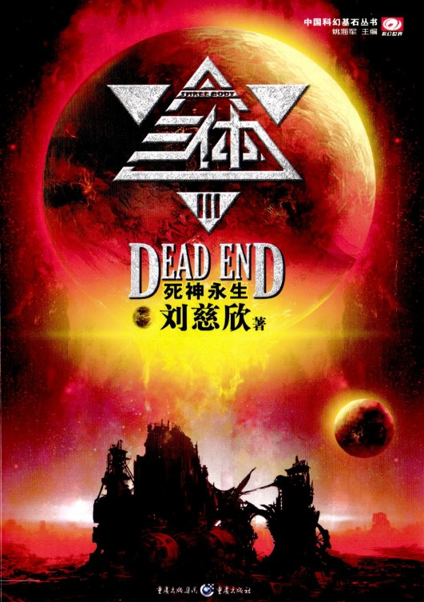
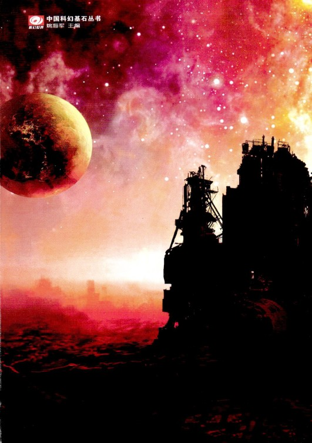
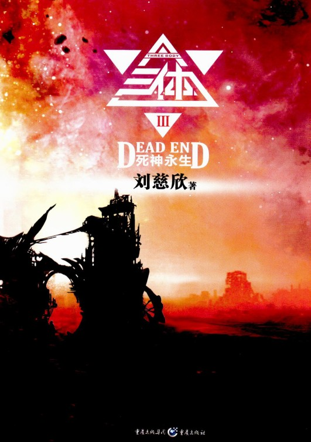

※※※
从长长的睡眠中醒来，章北海一看时间，居然睡了十五个小时，这可能是他除了长达两个世纪的冬眠外睡得最长的一觉了。此时，他有一种新生的感觉，仔细审视自己的内心后，他发现了这种感觉的来源。
他现在是一个人了。
以前，即使独自悬浮在无际的太空中，他也没有一人独处的感觉，父亲的眼睛在冥冥之中看着他，这种目光每时每刻都存在，像白昼的太阳和夜里的星光，已成为他的世界的一部分，而现在父亲的目光消失了。
该出去了。章北海对自己说，同时整理了一下军装，他是在失重中睡眠的，衣服和头发丝毫没乱。最后看了一眼自己已经待了一个多月的这间球形舱室后，章北海打开舱门，飘了出去，他已经准备好平静地面对狂怒的人群，面对无数谴责和鄙夷的目光，面对最后的审判……面对自己不知道还有多长的余生，作为一名已经尽责的军人，不管将遇到什么，这余生肯定是平静的。
廊道中空无一人。
章北海慢慢前行，两边的舱室一间间向后移去，它们都大开着门。所有的舱室看起来都是一模一样的球形空间，舱壁是雪白的，像没有瞳仁的眼球。环境很洁净，没有看到一个打开的信息窗口，舰上的信息系统可能已经被重新启动并初始化了。
章北海想起了自己早年看过的一个电影，影片中的人物身处一个魔方世界，这世界是由无数间一模一样的立方体房间构成的，但每一间中都暗含着不同的致命机关，他们从一间进入另一间，无穷无尽……他突然惊奇于自己思想的信马由缰。在以前这是一种奢侈，但现在，长达两个世纪的人生使命已经完成，思想可以悠闲地散步了。
到了转弯处，前面是更长的一段廊道，仍然空空如也，舱壁均匀地发着乳白色的柔光，一时间竟让人失去立体感，感觉世界好生简洁。两侧的球形舱还是全部大开着门，仍是一模一样的白色球形空间。
“自然选择”号似乎被遗弃了，而此时在章北海的眼中，他置身于其中的这艘巨舰更像是一个巨大但简洁的符号，隐喻着某种深藏在现实后面的规律。章北海有一种错觉：这些一模一样的白色球形空间充满了周围无限延伸的太空，宇宙就是无限的重复。这时，一个概念突然在他的脑海中出现：全息。
在每一个球形舱中，都可以实现对“自然选择”号的全部操纵和控制，至少从信息学角度看，每一个舱就是“自然选择”号的全部，所以，“自然选择”号是全息的。
这艘飞船本身则像一粒金属的种子，携带着人类文明的全部信息，如果能够在宇宙的某处发芽，就有可能再次成长出一个完整的文明。部分包含着全部，所以，人类文明可能也是全息的。章北海失败了，他没能把这粒种子撒出去，他感到遗憾，但并不悲伤，这不仅仅是因为自己尽了责任。他已经获得自由的思想在飞翔。他想到，宇宙很可能也是全息的，每一点都拥有全部，即使有一个原子留下来，就留下了宇宙的一切。他突然有了一种包容一切的寄托感，十多个小时前，当他还在睡梦中时，在太阳系遥远的另一端。丁仪踏上他前往水滴的最后的航程，也有过这种感觉。
章北海来到了廊道的尽头，打开门，进入了战舰上最大的球形大厅。三个月前，他就是从这里第一次进入“自然选择”号的。现在同那时一样，在球形中央的空间中，悬浮着由舰队官兵组成的方阵，但人数比那时要多几倍。方阵分为三层，“自然选择”号的两千人队列处于中央一层，但章北海看出，只有这一层方阵是真实的，上下两层都是全息图像。他细看后辨认出来，全息图像方阵是由追击舰队四艘战舰的官兵组成的。在三层方阵的正前方，包括东方延绪在内的五名大校军官站成一排，其中四名是追击舰队的舰长。章北海看出里面除了东方延绪外也都是全息图像，这些图像显然是从追击舰队传来的。当章北海飘进球形大厅时，五千多人的目光会聚在他身上，这显然不是看叛逃者的目光，舰长们依次向他敬礼。
“亚洲舰队‘蓝色空间’号！”
“北美舰队‘企业’号！”
“亚洲舰队‘深空’号！”
“欧洲舰队‘终极规律’号！”
东方延绪最后一个向章北海敬礼：“亚洲舰队‘自然选择’号！前辈，您为人类保存下来的五艘星际战舰，也是现在人类太空舰队的全部，现在接受您的指挥！”
※※※
“崩溃了，都崩溃了，集体的精神崩溃。”史晓明摇头叹息着说，他刚从地下城归来，“整个城市都失控了，乱成一团。”
这是小区政府的一次会议，区行政官员都到了，冬眠者约占三分之二，其余是现代人。现在可以很清楚地把他们区分开来：虽然都处于极度的抑郁状态，但冬眠者官员都在低沉的情绪中保持着常态，而现代人则都或多或少地表现出崩溃的迹象，会议开始以来他们的情绪就多次失控，史晓明的话再次触碰了他们脆弱的神经。区最高行政长官泪痕未干，又捂着脸哭了起来，引得另外几名现代人官员同他一起哭；主管地区教育的官员则歇斯底里地大笑，还有一个现代人痛苦地咆哮起来，向地上摔杯子……
“你们安静。”史强说，他声音不高，但充满了威严，现代人官员们都安静下来，行政长官和几个同他一起哭的人极力忍住抽泣。
“真是一群孩子。”希恩斯摇摇头说，他是作为居民代表来参加会议的，也可能是唯一一个从联合舰队毁灭中受益的人——现在，现实与他的思想钢印一致了，他也就恢复了正常。在这之前，面对那看起来已经近在眼前的无比真实的胜利，他终日被思想钢印折磨着，精神几乎被撕裂了。他被送到市里的大医院，那里的精神医学专家对他也无能为力，但却对送他去的郊区官员和罗辑等人出了一个很奇怪的主意：就像左拉的《柏林之围》和一部黄金时代的老电影《再见列宁》中那样，为病人制造一个人类失败的虚假环境。他们回去后真的这么做了，好在现代虚拟技术已经发展到顶峰，制造这样一个环境并不难。希恩斯在他的住处每天都可以看到专为他播出的新闻，伴有栩栩如生的三维影像。他看到三体舰队的一部分加速航行，提前到达太阳系；在柯伊伯带战役中，人类联合舰队遭受重创，接着海王星轨道失守，三大舰队只得退守木星轨道进行艰难的抵抗……负责制作这个虚假世界的小区卫生官员对这项工作兴致勃勃。结果当真实的惨败发生后，该官员是最先精神崩溃的，此前，为了满足希恩斯的需要并给自己带来最大的乐趣，这位故事大王穷尽了自己的想象力，把人类的失败描述得尽可能惨重，但现实的残酷还是远超出了他的想象。
当舰队毁灭的影像从二十个天文单位外经过三小时传回地球时，公众的表现就像一群绝望的孩子，世界变成了被噩梦缠绕的幼儿园，群体的精神崩溃现象迅速蔓延，一切都失去了控制。
史强所在的小区里，比他级别高的行政官员要么辞职，要么在崩溃中无所作为，上一级政府紧急任命他接替小区最高行政长官的职务。虽然不是多大的官，但这一冬眠者小区在这场危机中的命运就掌握在他的手中，好在与城市相比，这里的冬眠者社会仍保持着稳定。
“我请大家注意现在的形势，”史强说，“地下城的人工生态系统一旦发生了问题，那儿就成了地狱，里面的人都会拥到地面上来，那样的话这里就不适合生存了。我们应该考虑迁移。”
“向哪儿迁呢？”有人问。
“向人口稀少的地方，比如西北，当然要先派人去考察一下。现在谁也说不好世界会变成什么样，会不会再来一次大低谷，我们得做好完全靠农业生存的准备。”
“水滴会攻击地球吗？”又有人问。
“操那份闲心干什么？”大史摇摇头说，“反正现在谁也拿它没办法，在它把地球撞穿之前，日子还得过，是不是？”
“说得对，操闲心是没用的，我对这点是再清楚不过了。”一直沉默的罗辑说。
※※※
人类仅存的七艘太空战舰都在飞离太阳系，它们分成两部分：一部分是“自然选择”号和追击它的舰队，共五艘战舰；另一部分是从水滴大毁灭中幸存的“量子”号和“青铜时代”号。这两支小舰队分别处于太阳系的两端，它们隔着太阳，沿着几乎相反的方向飞向茫茫太空，渐行渐远。
在“自然选择”号上，当章北海听完联合舰队全军覆没的过程汇报后，脸上的表情没有变化，目光仍平静如水，只是淡淡地说了一句：“密集编队是个不可原谅的错误，其他的，都在预料之中。”
“同志们，”章北海的目光越过五位舰长，扫视着由五舰战舰的官兵排成的三层队列，“我对你们用这个古老的称呼，是想说我们所有人今后必须拥有同一个志向。每个人应该明白我们所面对的现实，也应该看到我们将要面对的未来：同志们，我们回不去了。”
是的，回不去了，毁灭了联合舰队的水滴还在太阳系中，另外九个水滴也将于三年后到达，对于这支小舰队，曾经的家园现在是一个死亡陷阱。同时，回去已经没有意义，地球世界的末日已经不远，从收到的信息看，人类文明可能等不到三体主力舰队到达就会全面崩溃，这五艘飞船必须承担起延续文明的责任，能做的只有向前飞，向远飞，飞船将是他们永远的家园，太空将是他们最后的归宿。
这五千五百人就像刚刚割断脐带的婴儿，被残酷地抛向宇宙的深渊，像婴儿一样，他们只想哭。但章北海沉稳的目光像一个强劲的力场维持着阵列的稳定，使人们保持着军人的尊严。对于被抛弃在无边暗夜中的孩子们，最需要的就是父亲，现在，同东方延绪一样，他们从这名来自古代的军人身上感受到了父亲的力量。
章北海接着说：“我们永远是人类的一部分，但现在已经是一个独立的社会，必须摆脱对地球世界的精神依赖，现在，我们应该为自己的世界起一个名字。”
“我们来自地球，也可能是地球文明唯一的继承者，就叫星舰地球吧。”东方延绪说。
“很好。”章北海向东方投来赞许的目光，然后再次转向队列，“从此以后，我们每个人都是星舰地球的公民了，这一刻，可能是人类文明的第二个起点。我们有很多事情要做，现在，请每个人都回到自己的岗位上去。”
两个全息影像方阵消失了，“自然选择”号的方阵也开始散开。
“前辈，我们四艘舰是不是靠过来？”“深空”号的舰长问，他们的影像还没有消失。
章北海坚决地摇摇头，“没有必要，你们与‘自然选择’号目前相距约二十万公里，虽很近，但靠过来也是要消耗聚变燃料的，能源是我们生存的基础，现在已经所剩不多了，能省一点就省一点。我们是这片太空中仅有的人类，我理解你们想聚靠在一起的心情，但二十万公里并不算遥远。从现在起，我们必须从长远考虑了。”
“是啊，必须长远考虑了。”东方延绪轻轻地重复着章北海的话，双眼茫然地平视着，像是在遥望横亘在前面的漫漫岁月。
章北海接着说：“要尽快召开公民大会，把星舰地球的基本事务确定下来，然后尽早使大部分人进入冬眠，让生态循环系统在最小模式运行……不管怎么说，星舰地球的历史开始了。”
父亲的目光又在冥冥中出现了，像是来自宇宙边缘的穿透一切的射线。章北海感到了他的注视，他在心里说：是啊，爸爸，您真的不能安息，没有结束，一切又都继续下去了。
※※※
第二天（星舰地球仍采用地球计时），星舰地球召开了第一次全体公民大会，大会由各舰的五个分会场用全息影像联成一个主会场，到会的公民有三千人左右，其余无法离开岗位的人则通过网络参加。
会议首先确定了一件迫在眉睫的事：星舰地球的航行目标。会上一致通过保持现有航向不变。这是章北海在起航时就为“自然选择”号设定的目标，航向指向天鹅座方向，精确目标是NH558J2恒星，这是距太阳系最近的带有行星的恒星之一，它带有两颗行星，都是类似于木星的气液态行星。不适合人类生存，但可以为飞船补充核聚变燃料。现在看来，选择这个目标是经过深思熟虑的，因为在不同方向有另一颗带行星的恒星，据观测其中的一颗行星的自然环境与地球类似，而距离与前一个目标相比只远了一点五光年。但这颗恒星只带有一颗行星，如果这个世界并不适合人类生存（可生存的世界条件十分苛刻，且跨越光年的观测总是有偏差），那星舰地球就失去了补充燃料的机会。而到达NH558J2后，补充了燃料的飞船可以以最高航速更快地前往下一个目标。
NH558J2距太阳系十八光年，按照现在的航速，再考虑到航程中的各种不确定因素，星舰地球可能在两千年后到达。
两千年，这个冷酷的数字再一次使现实和未来清晰起来。即使考虑到冬眠因素，现在星舰地球的大部分公民也不可能活着到达目的地，他们的人生之路只能是这二十个世纪的漫长航程中的一段。而对于那些到达目的地的后代来说，NH558J2不过是一个中转站，谁也不知道下一个目的地在哪里，更不知道什么时候星舰地球能找到真正适合生存的家园。
其实，章北海的思考是异常理智的，他清楚地球之所以如此适合人类生存，并不是巧合，更不是什么人择原理的作用，而是地球生物圈与自然环境长期相互作用的结果，这种结果，在其他遥远恒星的行星上不太可能完全重复，他飞向NH558J2的选择蕴涵了一种可能：可生存世界可能永远也找不到，新的人类文明将是永远在航行之中的星舰文明。
但章北海没有明确表达自己的想法，真正能够接受星舰文明的，可能是星舰地球的下一代人了，这一代人只能把一个想象中的像地球那样的行星家园作为人生的寄托。
这一次公民大会还确定了星舰地球的政治地位，会议认为，五艘飞船永远属于人类世界，但在目前情况下，星舰地球在政治上已经不可能属于三大舰队和地球世界，而是一个完全独立的国家。
这个决议被发向太阳系，联合国和舰队联席会议沉默了许久才回信，没有表态，只有作为默许的祝福。
于是，人类世界现在分为三个国际：古老的地球国际、新时代的舰队国际和飞向宇宙深处的星舰国际。最后一个国际只有五千多人，却携带了人类文明的全部希望。
第二次公民大会开始讨论星舰地球的各级领导机构的问题。
在会议开始时，章北海说：“我认为这个议程早了些，我们必须首先确定星舰地球的社会形态，才能决定需要什么样的领导机构。”
“就是说，我们首先需要制定宪法。”东方延绪说。
“至少是宪法的基本原则吧。”
于是，会议在这个方向上展开讨论。大多数人的思想倾向是：星舰地球处于严酷的太空环境中，自身的生态系统又十分脆弱，在这样的条件下生存，必须建立一个纪律严明的社会，必须保证统一行动的意志。于是有人提出：应该保留现有的军队体制。这个想法得到了多数人的赞同。
“就是说，一个专制社会。”章北海说。
“前辈，应该有个好听些的名称吧，我们本来就是军队。”“蓝色空间”号舰长说。
“我认为不行。”章北海决然地摇摇头，“仅靠生存本身是不能保证生存的，发展是生存的最好保障。在航程中，我们要发展自己的科学技术，也要扩展舰队的规模。中世纪和大低谷的事实都证明，专制制度是人类发展的最大障碍，星舰地球需要活跃的新思想和创造力，这只有通过建立一个充分尊重人性和自由的社会才能做到。”
“如果前辈指的是建立一个现代地球国际那样的社会，星舰地球可是有先天的条件。”一名下级军官说。
“是的。”东方延绪对发言者点点头，“星舰地球的人数很少，且有极其完善的信息系统，任何问题，都可以很便捷地由全体公民讨论和表决，我们可以建立人类历史上第一个真正的民主社会。”
“也不行。”章北海又摇摇头，“正像前面那些公民所说，星舰地球航行在严酷的太空中，威胁整个世界的灾难随时都可能发生。人类社会在三体危机的历史中已经证明，在这样的灾难面前，尤其是当我们的世界需要牺牲部分来保存整体的时候，你们所设想的那种人文社会是十分脆弱的。”
所有与会者都面面相觑，他们的目光中流露出同一个意思：那该怎么办呢？
章北海笑了笑说：“我想得太简单了，这个问题在整个人类历史上都没有答案，怎么可能在一次会议上解决呢？我想，需要经历一个漫长的实践和探索的过程才能为星舰地球找到合适的社会模式。会后，全体公民应该对此展开充分的讨论……请原谅我干扰了会议的议程，还是按原来的议题进行吧。”
东方延绪从来没有见到章北海有那样的笑容，他很少笑，偶尔笑起来有一种自信和宽容，但他现在却表现出一种从来没有过的羞涩的歉意，虽然会议的这段插曲没有什么结果，但章北海是一个思维极其缜密的人，像这样提出欠思考的意见又收回的事是绝无仅有的，东方延绪从中看出了一种漫不经心，这次会议上他也没有做记录，而以往会议上他做记录都很认真，舰上只有他一个人还在使用古老的纸和笔，这成为他的一个标志。
那现在是什么占据了他的思想呢？
会议转而讨论舰队领导机构的事，公民们倾向于认为：目前还不具备举行选举的条件，应该维持各舰的指挥系统不变，舰长为各舰的领导者，同时，由五位舰长组成星舰地球的权力委员会，对重大事务共同讨论做出决定。而章北海则被所有与会者一致推选为权力委员会的主席，掌握星舰地球的最高权力。对这一决议举行了全体公民投票，百分之百通过。
但章北海拒绝了这个使命。
“前辈，这是你的责任！”“深空”号舰长说。
“在星舰地球，只有你拥有统领各舰的威信。”东方延绪说。
“我想我已经尽了责任，现在累了，也到了退休的年纪。”章北海淡淡地说。
散会后，章北海叫住了东方延绪，这时人们都已散去。
章北海说：“东方，我想恢复自己‘自然选择’号执行舰长的位置。”
“执行舰长？”东方延绪很吃惊地看着他说。
“是的，重新给我对战舰的最高操控权限。”
“前辈，我可以把‘自然选择’号舰长的位置让给你，我说的是真心话，而且，权力委员会和全体公民肯定都不会反对的。”
章北海笑着摇摇头，“不，你仍然是舰长，拥有舰长的一切指挥权，请相信，我不会对你的工作有任何干涉。”
“那你要执行舰长的权限干什么？现在这个岗位还有必要吗？”
“我只是喜欢这艘飞船，这可是我们两个世纪前的梦想，你也知道，为了有一天能造出这样的飞船，我都做过些什么……”
章北海看着东方延绪，以前他目光中的某种坚如磐石的东西消失了，只透出疲惫的空白和深深的悲哀，这使他看上去仿佛变了一个人，不再是那个冷静又冷酷、深思熟虑行动果敢的强者，而是一个被往昔的沉重岁月压弯了腰的人。看着他，东方延绪生出了从未有过的关怀和怜悯之情。
“前辈，你不要再去想那些事。对你在二十一世纪的行为，历史学家们有公正的评价：选择辐射驱动的研究方向，是人类宇航技术向正确的方向迈出的关键一步，也许在当时，那……那是唯一的选择，就像现在‘自然选择’号的逃亡是唯一选择一样。而且，按照现代法律，那件事的追诉时效早就过去了。”
“但我身上的十字架是卸不掉的，这你很难体会……所以，我对飞船有感情，比你们更有感情，总觉得我是它的一部分，我不可能离开它。再说，我以后总得干些什么，有事情干，心里总是安定些。”
章北海说完后就转身离去，他那疲惫的身影渐渐飘远，成为巨大的白色球形空间中的一个小黑点。东方延绪看着他消失在一片洁白中，一阵从未有过的孤独感从四面八方的白色中涌出来，淹没了她。
以后又接连召开了几届公民大会，星舰地球的人们沉浸于创造新世界的激情中。他们热烈地讨论这个世界的宪法和社会结构，制定各种法律，筹划第一次选举……不同军阶的军官和士兵之间，不同的战舰之间都有了充分的交流。人们也在展望这个世界的走向，期待星舰地球成为未来文明雪球的一个内核，随着舰队到达一个又一个的行星系，这个雪球会不断扩大。越来越多的人把星舰地球称为第二个伊甸园，这里将是人类文明的第二个起源地。
但这样美好的状况并没有持续很长时间，因为，星舰地球真的是伊甸园。
蓝西中校是“自然选择”号上的首席心理学家，他领导的第二战勤部是一个由心理学专业军官组成的重要机构，负责战舰在远程太空航行和作战中的心理工作。当星舰地球开始她的不归航程时，蓝西和部下就像面对强敌进攻的战士一样高度紧张起来。按照过去演习过多次的预案，随时准备应付舰上各种可能的心理危机。
他们一致认为，目前最大的敌人无疑是“N问题”，即Nostalgia，思乡病。
这毕竟是人类历史上第一次永不回归的航行，“N问题”可能导致群体性的心理灾难。蓝西指挥第二战勤部做好了一切应对的准备，包括建立与地球和三大舰队交流的专用通信频道，舰上的每个人都可以与地球和舰队的亲友保持不间断的联系，收看两个国际的大部分新闻和其他电视节目。虽然目前星舰地球距太阳已经有七十个天文单位，通信有九小时的时滞，但与地球和舰队的通讯质量还是很好的。第二战勤部的心理军官们除了对有“N问题”迹象的对象进行积极心理辅导和调节外，还准备了应付大规模群体性心理灾难的极端措施：对失控的人群进行强制冬眠隔离。
后来的事实证明，这一切担心都是多余的，虽然“N问题”在星舰地球中广泛出现了，但远未达到失控的程度，甚至未达到以前的常规远航时的程度。蓝西开始时对此很困惑，但很快找到了原因：人类的主力舰队覆灭后，地球世界便失去了一切希望，虽然距最后的末日还有两个世纪（这是最乐观的估计），但从收到的新闻中看到，那个在大失败的沉重打击下陷入混乱的世界已经充满了死亡的气息。对于星舰地球来说，不可能在太阳系的地球上寄托太多的东西了，对于这样一个家园的思念也是有限的。
但敌人还是出现了，而且比“N问题”更为凶险，当蓝西和第二战勤部意识到时，他们的阵地已经失陷。
从以往太空远航的经验中蓝西知道，“N问题”总是首先在士兵和下层军官中出现，因为与高层军官相比，他们因工作和责任所占用的注意力较少，自我心理调节能力也较弱。所以第二战勤部从一开始就把主要的注意力放在下层，而阴影却是从上层开始出现的。蓝西首先注意到一个奇怪的现象。星舰地球领导机构的第一次选举即将开始，这次选举是面向全民的，对于高层指挥官们来说，他们中的大部分人将面临着从军官向政府官员的转变，他们的位置也将重新洗牌，其中很多人将被来自下层的竞争者代替。蓝西惊奇地发现，在“自然选择”号的高级指挥层，竟然没有人对这次将决定他们今后人生的选举给予太多的注意，他没有看到高层军官中的任何人进行过最起码的竞选活动。谈到选举，他们都没有兴趣，这不由使蓝西想起了第二次公民大会上章北海的心不在焉。
在中校以上军衔的人群中，心理失衡的症候开始如现。他们中的大部分人开始变得越来越内向，长时间地独处沉思，人际交流急剧减少，他们在各种会议上的发言也越来越少，很多人选择了完全沉默。蓝西看到，阳光正在从他们的眼睛中消失，他们的目光都变得阴沉起来，同时，每个人都害怕别人注意到自己目光中的阴霾，不敢与人对视，在偶尔的目光相遇时。会像触电似的立刻把视线移开……
级别越高的人，这种症状越严重，同时有向低层人群扩散蔓延的迹象。
心理咨询无法进行，所有人都坚决拒绝同心理军官谈话，第二战勤部不得不动用自己的特别权力进行强制咨询，但谈话对象大都保持沉默。
蓝西决定必须与最高指挥官谈话，于是去找东方延绪。本来，在“自然选择”号乃至整个星舰地球，章北海拥有至高无上的威望和地位，但他放弃了一切，把自己当成一个普通人，退出竞选，只是履行执行舰长的职责，把舰长的指令传达给飞船控制系统。其余时间，他便是在“自然选择”号的各处流连，向各级军官和士兵了解飞船的详情，每时每刻都表露出对这艘太空方舟的感情。除此之外，他的心情平静淡然，丝毫未受舰上群体性心理阴影的影响。这固然与他使自己置身事外有关，但蓝西知道还有另一个重要的原因：古人的心理远不如现代人敏感，在目前的情况下，这种麻木是一种良好的自我保护机能。
同“自然选择”号上的许多男人一样，美丽的舰长一直是蓝西中校暗恋的对象，当他看到眼中失去阳光的东方延绪显得那么脆弱和无助时，心中涌起一阵痛楚。
“舰长，对跟前发生的事，你至少应该给我一些提示吧。”蓝西说。
“中校，应该是你给我们提示。”
“你是说，对自己的状态，你什么都不知道？”
东方延绪黯淡的双眸中突然涌出无尽的忧伤，“我只知道，我们是第一批进入太空的人类。”
“你说什么？”
“这是人类第一次真正进入太空。”
“哦……我明白你的意思：以前，不管人类在太空中飞多远，只是地球放出的风筝，有一根精神之线把他们与地球相连，现在这根线断了。”
“是的，线断了，最实质的变化在于：不是因为拉线的手松开了，而是那手消失了，地球世界正在走向末日。事实上在我们的精神中她已经消亡，我们这五艘飞船与任何世界都没有联系，我们周围除了太空深渊什么都没有了。”
“这确实是人类从未面对过的心理环境。”
“是的，在这种环境下，人类的精神将发生根本的变化，人将变成……”东方延绪突然失语，眼中的忧伤消失了，只留下灰暗，就像雨后仍被阴云覆盖的天空。
“你是说，这种环境下，人将变成新人？”
“是新人吗？不，中校，人将变成……非人。”
东方说出的最后两个字让蓝西打了个寒战，他抬头看着她，她的目光并没有回避，但一片空白，蓝西只看到一扇对外界紧闭的心灵之窗。
“我是说，不是以前那种概念的人了……中校，我能说的只是这些，你尽自己的努力就行了，而且……”东方接下来的话像是在梦呓，“也快轮到你了。”
情况继续恶化，在蓝西与东方延绪谈话后的第二天，“自然选择”号上发生了一起恶性伤害事件，导航系统的一名中校开枪击伤了同住一个舱室的另一名军官。据受害者回忆，那名中校在半夜突然醒来，发现受害者也醒着，就指责他在偷听自己的梦话，争执之中情绪失控而开枪。蓝西立刻见到了被拘禁的那名中校。
“你怕他听到的是什么梦话？”蓝西问。
“这么说他真的听到了？”袭击者一脸恐惧地问。
蓝西摇摇头，“他说你当时根本没有说梦话。”
“就算说了又怎么样？你们怎么能把梦话当真？我心里不是那么想的！我当然不会因为一句梦话下地狱！”
蓝西最终也没有问出袭击者想象中的梦话的内容，就问他是否介意接受催眠治疗。没想到这使得袭击者的情绪再次失控，他突然跃起死死扼住蓝西的脖子，宪兵进来才把他们拉开。走出拘禁室后，一名听到刚才谈话的宪兵军官对蓝西说：
“中校，不要再提什么催眠治疗，否则第二战勤部将成为全舰最痛恨的地方，你们都活不长的。”
蓝西只好与“企业”号战舰的心理学家斯科特上校联系，斯科特同时也是“企业”号上的随舰牧师（亚洲舰队的战舰上大都没有这个职位）。现在，“企业”号和原追击舰队的其他三艘战舰仍在二十万公里之外。
“你那儿怎么这么暗，”蓝西看着从“企业”号上传来的图像问。斯科特所在的舱室的球形舱壁被调得只发出黯淡的黄光，同时舱壁上还映着外部的星空图像，斯科特仿佛置身于一个迷漫着昏暗雾霭的宇宙中，他的面孔隐藏在阴影里，即使这样，蓝西还是能感觉到他的目光从自己的注视中迅速移开。
“伊甸园正在暗下来，黑暗将吞噬一切。”斯科特用疲惫的声音说。
蓝西找斯科特，是觉得他身为“企业”号的牧师，很可能有人在忏悔中向他吐露了实情，他也许能给自己一些提示，但听到这话，又看到上校阴影中若隐若现的眼神。蓝西知道什么都问不出来，于是把要问的话压下去，换了一个连他自己都吃惊的问题：“第一个伊甸园发生过的事，都要在第二伊甸园里重复吗？”
“不知道，反正毒蛇已经出现了，第二伊甸园的毒蛇正在爬上人们的心灵。”
“这么说，你已经吃了智慧果？”
斯科特缓缓地点点头，然后低下的头再也没有抬起来，像是在极力隐藏那出卖自己思想的目光，“算是吧。”
“被逐出伊甸园的将是谁？”蓝西的声音有些发颤，手心里渗出了冷汗。
“有很多人，但与上次不同，这次可能有人留下。”
“谁？谁留下？”
斯科特长叹一声：“蓝中校，我说得够多了，你为什么不自己去找智慧果？反正人人都要走这一步，不是吗？”
“去哪儿找？”
“放下你的工作，多想想，多感受一下，你就找到了。”
与斯科特谈话后，心绪纷乱的蓝西停止了忙碌，按上校的劝告静心思考。比他想象的还要快，伊甸园冰凉湿滑的毒蛇也爬进了他的意识，他找到了智慧果并吃下了它，心灵中的最后一缕阳光永远消失了，一切没入黑暗之中。
在星舰地球中，一根无形的弦在悄悄绷紧，已经到了断裂的边缘。
两天后，“终极规律”号的舰长自杀了。
当时，他只身站在舰尾的平台上，平台在一个透明球形罩内，使得这里像暴露在太空中一样。
舰尾正对着太阳系方向，这时的太阳，只是一颗稍亮些的黄色星体，而这个方向是银河系旋臂外围，星星稀疏，太空肆意彰显着它的深邃和广漠，让人的眼睛和心灵都没有依托。
“黑，真他妈的黑啊。”舰长自语道，然后开枪自尽了。
※※※
在得知“终极规律”号舰长自杀后，东方延绪预感到最后的时刻就要来到了，她紧急召集两位副舰长在歼击机库的球形大厅会面。
在前往大厅的廊道中，东方延绪听到有人在后面叫她，回头一看是章北海，由于沉浸在阴郁的心境中，她这两天几乎把他忘了。他打量着东方延绪，目光中充满着父辈的关切，这目光让东方感到从未有过的舒适，因为现在在星舰地球中，很难再见到这样一双没有阴影的眼睛了。
“东方，我觉得你们最近的状态有些不对，虽然我不知道原因，但你们心里好像都藏着什么事儿似的。”
东方延绪没有回答他的问题，只是反问：“前辈，你最近还好吗？”
“好，很好。到处参观、学习。我现在正在熟悉‘自然选择’号的武器系统，当然，只搞懂些皮毛，不过很有意思，想想哥伦布参观航空母舰时的感觉吧，我就是那样。”
现在看到章北海这样一个平静悠闲的人，东方延绪甚至感到一丝嫉妒：是的，他已经完成了自己伟大的事业，有权享受这样的平静。现在，他从一个创造历史的伟人回归为无知的冬眠者，他需要的只是保护了。想到这里，东方延绪说：“前辈，不要再向别人问你刚才的那个问题，不要问这一切都是为什么。”
“为什么？为什么不能问呢？”
“问这些很危险，而且，你真的不需要知道，相信我。”
章北海点点头，“好吧，那我不问了，很感谢你能把我当成一个普通公民，我就希望这样。”
东方延绪匆匆地道了别，自顾自飘去，她听到星舰地球的创立者在后面说：
“东方，不管是什么事情，顺其自然吧，一切都会好起来的。”
在球形大厅的中央，东方延绪见到了两位副舰长。之所以选择在这里会面，是因为大厅空间开阔，有身处旷野的感觉，另外他们三人在这里好像处于一个洁白世界的中心，仿佛宇宙中除了他们之外空无一物，这都会令谈话时有一种安全感。
他们三人看着三个不同的方向。
“我们必须把事情明确了。”东方延绪说。
“是的，每拖一秒钟都很危险。”副舰长列文说，然后，他和井上明都转身看着东方延绪，意思很明白：你是舰长，你先谈。
但东方延绪没有这个勇气。
这是第二个人类文明的拂晓，这时发生的任何事情，都可能成为新的荷马史诗或新圣经的内容。犹大之所以成为犹大，就是因为他最先吻了耶稣，与第二个吻的人有本质的区别。现在也一样，第一个谈这件事情的人将是第二文明史上的一个里程碑，他（她）有可能成为犹大，也有可能成为耶稣，不管是哪种可能，东方延绪都没有这个勇气。
但她必须承担自己的使命，于是做出了一个聪明的选择：没有回避两位副舰长的目光。到这个时候，语言已经没有必要，眼睛就能进行所有的交流，他们相互对视着，交错的目光像高速信息通道，把三个心灵联结起来，一切都在对视中飞快地交流着。
燃料。
燃料。
燃料。
航线上的情况还不明了，但已经探明的至少有两片星际尘埃。
阻力。
当然，穿越之后，飞船的速度将被尘埃阻力降至光速的千分之零点三。
这时距目标星系NH558J2还有十多光年，最后到达需要六万年左右。
那就是永远到不了。
飞船也许能到，但船上的生命到不了，即使冬眠系统也维持不了那么长时间。
除非……
除非在尘埃中保持速度，或在穿越后加速。
可是燃料不够。
聚变燃料是飞船的唯一能源，还有其他地方要用：飞船的生态循环系统、可能的航向修正……
还有到达目标星系时的减速，NH558J2星比太阳的质量小得多，仅靠引力减速不能泊入轨道，要消耗大量燃料减速，否则就掠过了目标星系。
星舰地球的所有燃料，基本上够两艘飞船的。
但要保险些，就只够一艘飞船了。
燃料。
燃料。
燃料。
“还有配件问题。”东方延绪说。
配件。
配件。
配件。
特别是关键系统的配件：聚变发动机、信息和控制系统、生态循环系统。
不像燃料那么紧急，但却是长远生存的基础。NH558J2没有适合生存的行星，不能定居和建立工业，也没有相应的资源，只有在补充燃料后飞向下一个星系才有可能建立生产配件的工业。
“自然选择”号的关键配件只有两份存余。
太少了。
太少了。
除聚变发动机外，星舰地球的所有飞船上的关键配件大部分都可以通用。
发动机配件在改装后也可以使用。
“向一到两艘舰上集中人员？”东方延绪又说，这时，有声语言的作用只是引导目光交流的方向。
不可能。
不可能。
不可能，人太多了，生态循环系统和冬眠系统都容纳不了，现有的容量即使再增加一点人都是灾难性的。
“那么，现在明确了？”东方延绪的声音又在空旷的白色空间中响起，像是沉睡中的人偶尔出现的梦呓。
明确了。
明确了。
一部分人死，或者所有人死。
这时，目光也沉默了，三个人仿佛被来自宇宙深处的雷霆所震慑，心灵在恐惧中颤抖，每人都有把目光移开的强烈欲望，但东方延绪首先使自己的目光稳定下来。
“别这样。”她说。
别这样。
别放弃。
不放弃？
不放弃！因为别人不会放弃，我们放弃了。就会被逐出伊甸园。
为什么是我们？
当然也不应该是他们。
谁都不应该是。
但总要有人被逐出，伊甸园只能容下数量有限的人。
我们不想离开伊甸园。
所以不要放弃！
三道即将离散的目光又重新交织在一起。
次声波氢弹。
次声波氢弹。
次声波氢弹 ① 。
每艘舰都装备了。
用隐形导弹发射，很难防御 ② 。
三人的目光暂时分开了，他们的精神此时都已到了崩溃的边缘，需要休息。
当三双眼睛再次互相对视时，目光又变得飘忽不定了，像三支在风中摇曳的烛火。
太邪恶了！
太邪恶了！
太邪恶了！
我们变成魔鬼了！
我们变成魔鬼了！
我们变成魔鬼了！
“可……他们怎么想呢？”东方延绪轻声问，在两位副舰长的感觉中，这声音虽然细小，却像蚊鸣般在白色的空间里萦绕不绝。
是啊，我们不想成为魔鬼，可是不知道他们怎么想。
那我们还是魔鬼，否则怎么能无端地把别人想成魔鬼？
那好，我们就不把他们想成魔鬼。
“问题没有解决。”东方延绪轻轻摇摇头。
是的，虽然他们不是魔鬼，问题也没有解决。
因为他们也不知道我们怎么想。
那么，假设他们也知道我们不是魔鬼。
问题仍在。
他们不知道我们是怎样想他们。
他们不知道我们是怎样想他们怎样想我们。
再往下，这是一个无限的猜疑链：他们不知道我们是怎样想他们怎样想我们怎样想他们怎样想我们怎样……
怎么样打断这条猜疑链呢？
交流？
在地球上可以，但在太空中不行。一部分人死，或者所有人死。这是太空为星舰地球设定的生存死局，一堵不可逾越的墙，在它面前，交流没有任何意义。
只剩一个选择，只是谁来选的问题。
黑，真他妈的黑啊。
“不能再拖了。”东方延绪决然地说。
是不能拖了，在这片黑暗的太空中，决斗者都在凝神屏息，那根弦就要绷断了。
每一秒，危险都在以指数增长。
既然谁先拔枪都一样，不如我们先拔。
这时，一直沉默的井上明突然说话：“还有一个选择！”
我们自愿牺牲。
为什么？
为什么是我们？
我们三人当然可以，但我们有权替“自然选择”号上的两千人做出这种选择吗？
三个人此时都站在一道锋利的刀刃上，正在被痛苦地切割着，而向刀刃的哪一侧跳都是坠入无底深渊，这是太空新人类诞生前的阵痛。
“这样好不好？”列文说，“先锁定目标，再接着考虑吧。”
东方延绪点点头，列文立刻在空中调出了武器系统控制界面，打开次声波氢弹和相应运载导弹的操控窗口。在以“自然选择”号为原点的一个球面坐标系上，二十万公里外的“蓝色空间”号、“企业”号、“深空”号和“终极规律”号显示为四个光点。
距离隐去了目标的结构，太空尺度上的一切都是点而已。
但这四个光点分别被四个红色的光环套住了，那是四圈死亡的绞索，表示这些目标已经被武器系统锁定！
被惊呆了的三人互相看看，同时摇摇头，表示这不是自己所为。除了他们，拥有武器系统目标锁定权限的还有武器控制和目标甄别军官，但他们的锁定操作都要得到舰长或副舰长的授权。那么只剩下一个人拥有直接锁定目标并发起攻击的权限。
我们真傻，他毕竟是一个两次改变历史的人！
他是最早想到这一切的人！
没人知道他是什么时候想到的，可能是在星舰地球成立时，甚至更早，在得知联合舰队毁灭时……他真的是先天下之忧而忧。像那个时代的父母一样，一直在为孩子们操着心。
东方延绪以最快的速度飞过球形大厅。两位副舰长紧跟着她。他们出门后又穿过长长的廊道，来到章北海的舱室门前，看到他的面前也悬浮着他们刚才看到的同一个界面。他们想冲进去，但“自然选择”号起航逃亡时的那一幕又出现了：
他们撞在舱壁上，没有门，只是那一个椭圆形区域的舱壁变得透明了。
“你干什么？”列文大喊。
“孩子们。”章北海说，他第一次对他们用这个称呼，虽然只能看到背影，但能够想象出他那平静如水的目光，“这事就由我来做吧。”
“你不下地狱谁下地狱，是吗？”东方延绪大声说。
“从成为军人的那一刻起，我就准备好了去任何地方。”章北海说着，继续进行武器发射前的操作，外面的三人都看到，他虽然很不熟练，但每一步都正确。
泪水从东方的双眼涌出，她喊道：“我们一起去好吗？让我进去，我们一起下地狱！”
章北海没有回答，只是继续操作。他设定了导弹的手动自毁功能，可以在飞行途中由母舰操控自毁，完成这一步后他才说：“东方，你想想，我们以前可能做出这种选择吗？绝不可能，但现在我们做出了，太空使我们变成了新人类。”
他把导弹战斗部距目标最近的爆炸距离设为五十公里，这样可以尽量避免对目标内部设施的破坏，但即使再远些，也处于对目标内部生命的杀伤距离之内，“新的文明在诞生，新的道德也在形成。”他拆除了氢弹战斗部三道保险锁中的第一道，“未来回头看看我们做的这一切，可能是很正常的事，所以，孩子们，我们不会下地狱的。”第二道保险锁也被拆除。
突然，警报声响彻飞船，如同来自黑暗太空的万鬼哭号，显示界面从半空中像雪片般疯狂地跳出，显示着已经突破“自然选择”号防御系统的来袭导弹的大量信息，但没有人来得及看了。
从警报响起到来袭的次声波氢弹爆炸，只间隔了四秒钟。
从“自然选择”号最后传回地球世界的影像看，章北海可能只用了一秒钟就明白了一切。他本以为自己在两个多世纪的艰难历程中已经心硬如铁，但没有发现心灵最深处隐藏着的那些东西，在做出最后决断前他曾犹豫过，曾经努力抑制住心灵的颤抖，正是心中这最后的柔软杀了他，也杀了“自然选择”号上的所有人，在长达一个月的黑暗对峙中，他只比对方慢了几秒钟。
三颗小太阳亮起，照亮了这片黑暗的空间。它们成一个等边三角形把“自然选择”号围在正中，平均距离飞船约四十公里。核聚变火球的持续时间为二十秒，这期间火球在以次声波频率闪烁，但肉眼是看不出来的。
从传回的影像上看，在剩下的三秒钟时间里，章北海转向东方延绪方向，竟笑了一下，说出了几个字：“没关系的，都一样。”
对这几个字有猜测的成分，他没来得及说完，强大的电磁脉冲已经从三个方向到达，“自然选择”号巨大的舰体像蝉翼般振动起来，振动的能量转化为次声波，影像中，迷漫的血雾笼罩了一切。
攻击来自“终极规律”号，它向星舰地球的其他四艘飞船发射了十二枚装载着次声波氢弹弹头的隐形导弹，向二十万公里外的“自然选择”号发射的三枚比其他九枚提前了一段时间，以使其和向附近三艘飞船发射的导弹同时到达起爆位置。“终极规律”号上接任自杀舰长的是一位副舰长，但究竟是谁做出了这个终极抉择并首先发动攻击的却不得而知，也永远不可能知道了。
“终极规律”号并没有成为伊甸园最后的幸运儿。
在追击舰队其他三艘战舰中，“蓝色空间”号做好了应对意外事变的准备，在受到攻击前，它的内部已被抽成真空，所有人员都穿上了航天服。由于真空条件下不可能产生次声波。所以没有任何人员伤亡，只是舰体在超强的电磁脉冲中受到了轻微损伤。
当核弹的火球刚剐亮起时，“蓝色空间”号就开始了反击。首先使用反应速度最快的激光武器射击，“终极规律”号立刻被五束高能伽马射线激光击中，舰体被灼出了五个大洞，内部迅速被火焰吞没，并发生了局部爆炸，丧失了一切作战能力。“蓝色空间”更为猛烈的攻击接踵而至，在连续的核导弹和暴雨般的电磁动能弹攻击下，“终极规律”号发生了剧烈爆炸，其中人员无一生还。
几乎在星舰地球发生这场黑暗战役的同时，在太阳系遥远的另一侧也发生了同样的惨剧：“青铜时代”号对“量子”号发起突然攻击，同样使用次声波氢弹杀死了目标飞船内的全部生命，但保存了目标完整的舰体。由于这两艘飞船传回地球的资料比较少，人们不清楚两舰之间发生了什么。虽然都在大毁灭中进行过剧烈的加速，但两艘飞船都没有像追击舰队那样进行过减速推进，所以它们存留的燃料应该比星舰地球充裕。
无际的太空就这样在它黑暗的怀抱中哺育出了黑暗的新人类。
在“终级规律”号爆炸形成的不断扩散的金属云中，“蓝色空间”号靠近已经没有任何生命迹象的“企业”号和“深空”号，收集了它们的所有聚变燃料，然后开始拆卸各种部件之后，“蓝色空间”号又飞到二十万公里之外的“自然选择”号，做了同样的事情。这期间，星舰地球像一个太空中的大工地，在三艘已经死亡的巨舰的舰体上，点缀着无数的激光焊花，如果章北海还话着，此景一定会让他想起两个世纪前的“唐”号航空母舰。
“蓝色空间”号把已被切割成多段的三艘战舰的残骸围成巨石阵的形状。构建了一处太空陵墓，在这里，为黑暗战役中的全体死难者举行了葬礼。
“蓝色空间”号身着航天服的一千二百七十三人组成的方阵悬浮在陵墓的中央，他们是星舰地球现存的全体公民。在他们周围，飞船巨大的残骸像山峰般围成一圈，残骸上被切割的裂口像漆黑的大山洞，四千二百四十七名死者的遗体就放在这些残骸中，活着的所有人都处于残骸的阴影里，仿佛置身于深夜中的山谷，只有残骸间的缝隙透进银河系冰冷的星光。
葬礼中，所有人的心情都是平静的，太空新人类已经度过了婴儿期。
一盏小小的长明灯亮了起来，它是一个只有五十瓦的小灯泡，旁边还有一百个备用灯泡，可以自动替换损坏的灯泡，长明灯的电源来自一个小型核电池，可以连续亮几万年。它那黯淡的光亮好似山谷中的烛光，在残骸黑暗的高崖上投下一小圈光晕，那片被照亮的钛合金壁上镌刻着所有死难者的名字。没有墓志铭。
一小时后，太空陵墓被“蓝色空间”号加速的光芒最后一次照亮，陵墓将以光速的百分之一滑行，几百年后，将在星际尘埃中被减速至光速的千分之零点三，在六万年后到达NH558J2，而在这五万多年前，“蓝色空间”号已经从这里飞向下一个星系。
“蓝色空间”号驶向太空深处，它携带着充足的聚变燃料，以及八倍存余的关键配件。飞船内部不可能放下如此多的物品，就在船体上附加了几个外部存储舱，使得这艘飞船变得面目全非，成为一个非常庞大粗陋的不规则体，但更像一个远行者了。
一天前，在太阳系的另一端，“青铜时代”号也加速离开了“量子”号的废墟，飞向金牛星座方向。
“蓝色空间”号和“青铜时代”号来自一个光明的世界，现在却变成了两艘黑暗之船。
宇宙也曾经光明过，创世大爆炸后不久，一切物质都以光的形式存在，后来宇宙变成了燃烧后的灰烬，才在黑暗中沉淀出重元素并形成了行星和生命。所以，黑暗是生命和文明之母。
在地球世界，对“蓝色空间”号和“青铜时代”号的谩骂和诅咒排山倒海般涌向外太空，但两艘飞船没有任何回应，它们切断了与太阳系的一切联系，对于这两个世界来说，地球已经死了。
两艘黑暗之船与黑暗的太空融为一体，隔着太阳系渐行渐远。它们承载着人类的全部思想和记忆，怀抱着地球所有的光荣与梦想，默默地消失在永恒的夜色中。
注释
① 一种太空核武器，用于打击对常规辐射有良好屏蔽的飞船目标，能够以空气中的次声波的频率连续发生多次核爆炸，每次都产生强烈的电磁辐射，电磁辐射与目标飞船的金属外壳相互作用，将电磁能量转化为飞船内部空气的声能，产生超强次声波，杀死飞船内部的一切宏观生命，但对于飞行的设施基本没有损坏。
② 由于次声波氢弹通过电磁脉冲产生杀伤，并不需要直接命中目标，在距目标相当远的距离爆炸就能杀伤目标内部的人员。而对雷达隐形的导弹，只有接近目标时才能被包括可见光观测在内的其他探测手段发现。
※※※
“这就对了！”
这是罗辑在得知太阳系两侧发生的黑暗战役时说的第一句话，然后，他丢下茫然的史强，独自跑出房间，狂奔穿过小区，面对着华北沙漠站住了。
“我是对的！我是对的！”他对着天空喊道。
这时正是深夜，可能是因为刚下过雨的缘故，今天大气的能见度很好，能看到星星。然而星空远没有二十一世纪那么清澈，只能看到最亮的星辰。星空显得稀疏了许多，但罗辑还是找回了两个世纪前那个寒冷的深夜他在冰湖上的感觉。
这时，作为普通人的罗辑消失了，他再次成为一个面壁者。
“大史，我手里有人类胜利的钥匙！”罗辑对跟过来的史强说。
“哦？呵呵……”
史强略带嘲讽的笑让罗辑从亢奋中冷静下来，“我知道你不相信。”
“那现在该做什么呢？”史强问。
罗辑坐到沙地上，他的情绪飞快地跌到了谷底。“做什么，好像什么也做不了。”
“至少你可以把想法向上面反映一下。”
“我不知道有没有用，但试试吧，就算是尽到面壁者的责任。”
“需要找哪一级？”
“最高层。联合国秘书长，或者舰队联席会议主席。”
“这怕是不容易，咱们现在都是老百姓……不过总得试试吧，你只能……嗯，先去市政府，找市长。”
“那好，我这就去市里。”罗辑站起身来。
“我和你一起去吧。”
“不用，我自己去。”
“我大小是个政府官员，要见市长比你容易些。”
罗辑仰头看看天空问：“水滴什么时候到地球？”
“新闻上说再有十几个小时就到了。”
“知道它是来干什么的吗？它的使命不是毁灭联合舰队，也不是攻击地球，它是来杀我的，我不想到时候你和我在一起。”
“呵呵……”大史又发出了那种嘲讽的笑声，“不是还有十几个小时吗，到时候我离你远点儿就是了。”
罗辑苦笑着摇摇头，“你根本不拿我说的当回事，那干吗要帮我？”
“老弟，信不信你那是上边的事，我这人做事总是稳妥起见。既然二百年前从几十亿人里把你选出来，总是有些道理的吧？如果在我这儿耽搁了，那我不成千古罪人了？要是上边也不把你当回事，那我也没什么损失，不就进一次城嘛。不过有一点：说现在飞向地球的那个玩意儿是来杀你的，我是无论如何也不信，杀人的事儿我熟悉，就算凶手是三体人，这也太离谱了。”
罗辑和大史两人在凌晨到达旧城中的地下城入口，看到入城的电梯还在正常运转。从地下城中外出的人很多，且都携带着大量的行李，但下去的人很少，在电梯中除了他们之外只有两个人。
“是冬眠者吧？都在向上走，你们下去干什么？城市里很乱。”其中一个年轻人问，他的衣服上不断有火球在黑色的背景上闪耀，仔细一看，原来是联合舰队毁灭时的影像。
“那你下去干什么？”史强问。
“我在地面上找好了住处，下去拿些东西。”年轻人说，对他们点点头，“你们地面上的人就要发财了。我们在地面没有房子，上面房子的产权大部分是你们的，我们上去后只好从你们手中买。”
“地下城一旦崩溃，那么多的人都要拥到地面上，那时大概没什么买卖之说了。”史强说。
缩在电梯一角的那个中年人听着他们的话，突然把手捂在脸上发出哀鸣：
“噢，不，噢——”然后蹲下去哭了起来。他的衣服上映着一幅很古典的《圣经》画面：赤裸的亚当和夏娃站在伊甸园的树下，一条妖艳的毒蛇在他们之间蠕动着，不知是不是象征着刚刚发生的黑暗战役。
“他这样的人很多。”年轻人不屑地指指哭泣者说，“心智不健全。”他的双眼亮了起来，“其实，末日是一段很美的时光，甚至可以说是最美的时光。这是历史上唯一一次的机会，人们可以抛弃一切忧虑和负担，完全属于自己。像他这样子真是愚蠢，这时最负责任的生活方式就是及时行乐。”
电梯到达后，罗辑和史强走出出口大厅，立刻嗅到空气中有股怪味，是燃烧发出的。与以前相比，地下城里的光线亮了些，但这是一种让人烦躁的白光。罗辑抬头看看，从巨树的缝隙中看到的不是清晨的天空，而是一片空白，地下城穹顶上映出的外部天空影像消失了，这空白让他想起曾在电视新闻中看到的飞船上的球形舱。草坪上散落着纷乱的碎片，都是从巨树建筑上掉落下来的。不远处有几辆坠毁的飞车残骸，在一辆正在燃烧的残骸旁边围了一圈人，不断地把从草坪上拾到的其他可燃物扔进火里，有人还把自己闪亮着图像的衣服扔了进去。一处破裂的地下管道喷出高高的水柱，一群浑身湿透的人在周围孩子般地嬉戏。这些人不时齐声发出兴奋的尖叫，四散开来躲避从巨树上落下来的碎片，然后又聚集起来狂欢。罗辑再次抬头观望，发现巨树上有几处闪着火光，消防飞车尖啸着警笛，吊着从树上拆下的失火的树叶从空中飞过……他发现，在街上遇到的人分为两类，电梯中遇到的那两个人就是他们的代表。一类人情绪低落，目光呆滞地走过或一动不动地坐在草坪上，忍受着绝望的煎熬，现在，绝望的原因已经从人类的失败转移到目前面临的生活困境；另一类人则处于一种疯狂的亢奋状态，用放荡不羁来麻醉自己。
城市交通已陷入混乱，罗辑和史强等了半个小时才叫到一辆出租车，当无人驾驶的飞车载着他们穿行于巨树间时，罗辑又想起了在这座城市中的恐怖经历，感到像坐过山车般的紧张，好在飞车很快就到达了市政厅。
史强以前因工作关系来过几次市政厅，对这里比较熟悉。经过大量的联系，终于得到了市长接见的许可，但要等到下午才行。费此周折是在罗辑的预料之中，市长答应接见倒使他有些意外：在这样的非常时期，他们又是这样的小人物。吃午饭时史强告诉罗辑，这位市长是昨天新上任的，他原来是市政府里主管冬眠者事务的官员，可以算是史强的上级，与他比较熟。
“他是咱们老乡。”史强说。
在这个时代，老乡这个词的涵义由地理变成时间，并不是所有的冬眠者都能相互用这个称呼，只有在相近的时间进入冬眠的人才算老乡。在跨越漫长岁月之后相聚，时间老乡之间比以前的地理老乡更亲密了一层。
一直等到下午四点半，他们才见到市长。这个时代的高级官员一般都有明星气质，只有英俊漂亮的人才能当选，但现任市长长相平平。他的年龄和史强差不多，只是瘦了许多，有一个特点让人一眼就看出他是冬眠者：他戴着一副眼镜，肯定是两百年前的老古董，因为即使是隐形眼镜也早就消失了。但以前戴眼镜的人一旦不戴了，总感觉自己的相貌有问题，所以很多冬眠者即使视力被恢复后也戴着平光眼镜。市长看上去一脸疲惫，从椅子上站起时都显得吃力。当史强抱歉打扰并祝他高升时，他摇摇头说：“这个不堪一击的时代，我们这些皮实的野蛮人又能派上用场了。”
“您是地球上职位最高的冬眠者了吧？”
“谁知道呢？随着形势的发展，我们可能还有老乡升到更高的位置。”
“前任市长呢？精神崩溃了？”
“不不，这个时代也有坚强的人，他一直很称职，但两天前在骚乱地区的一次车祸中遇难了。”
市长看到史强身后的罗辑，立刻把手伸向他，“啊，罗辑博士，你好！我当然认识你，两个世纪前我还崇拜过你呢，因为在四个人中你最像面壁者，当时真猜不透你想干什么。”接着他说出了一句让两人心凉了半截的话。“你是我在这两天里接待的第四个救世主了，还有几十个在外面等着，但我实在没有精力见他们了。”
“市长，他和他们不一样，两个世纪前……”
“两个世纪前他被从几十亿人中选出来，正因为如此我才打算见你们，当然，”市长指指史强，“我找你还有事，咱们完了再谈。现在说你们的事吧，不过我有一个小小的请求：能不能先别谈你们的救世方案，那一般都很长，先说你们想让我做什么？”
罗辑和史强说明来意后，市长立刻摇摇头，“就是我想帮你们也做不到，我自己目前都有一大堆事情要向高层反映，这个高层比你们想见的要低，只是省和国家的领导人，但连这都很困难，你们应该知道，现在最高层在处理更大的麻烦。”
罗辑和史强一直在关注新闻，当然知道市长说的更大的麻烦是什么。
在联合舰队全军覆没后，沉寂了两个世纪的逃亡主义迅速复活。欧洲联合体甚至制定了一个初步的逃亡方案，用全民抽签方式决定首批十万名逃亡人选，这个方案居然在全民投票中被通过了。但在抽签结果出来后，大多数没有抽中的人都反悔了，由此发生了大规模的骚乱，公众转而一致认为逃亡主义是反人类的罪恶。
当外太空中幸存的战舰之间的黑暗战役发生后，对逃亡主义的指控又有了新的内容：事实证明，当与地球世界的精神纽带中断后，太空中的人在精神上将会发生彻底的异化，即使逃亡成功，那么幸存下来的也不再是人类文明，而是另一种黑暗邪恶的东西，和三体世界一样，这东西是人类文明的对立面和敌人，它还得到了一个名称——负文明。
随着水滴向地球的逼近，公众对逃亡主义的敏感也达到了顶峰，舆论警告说很可能有人在水滴攻击地球前出逃。所有太空电梯的基点和航天发射基地周围都有大量的人群在聚集，扬言要关闭所有进入太空的通道。他们确实有这个能力，这个时代全球公民都有拥有武器的自由，民用武器大部分是小型激光枪。一支激光手枪当然不会对太空电梯的运载舱和起飞中的航天器构成威胁，但与传统枪支不同的是，大量的激光枪可以使光束在一个点上聚集，一万支手枪如果同时照射一点，将无坚不摧。聚集在太空电梯基点和航天基地周围的人少则几万，多则上百万，他们中至少有三分之一的人携带武器，当发现运载舱上升或航天器起飞时，这些人会同时拔抢照射，激光的直线弹道使瞄准很精确，大部分的光束都会聚集在目标上并将其摧毁。在这种情况下，地球与太空的交通联系几乎中断了。
骚乱在发展，近两天，攻击的目标转向了同步轨道上的太空城。因为网上有大量谣言，说某某太空城正在被改造成逃亡飞船，于是，它们便受到地球上民众的集体攻击，由于距离遥远，激光束到达时已经发散减弱，加上太空城都处于旋转中，没有造成实质性伤害。而这项活动已成为末日时代全人类的一项集体娱乐。
在今天下午，欧联的三号太空城“新巴黎”同时受到北半球上千万支激光手枪的照射，导致城中的气温急剧上升，不得不疏散居民。这时从太空城中看去，地球比太阳还亮。
罗辑和史强都没有再说什么。
“在冬眠移民局的时候，我对你的工作印象很深。”市长对史强说：“还有郭正明，你好像认识他吧，他刚升任市公共安全局长，他也向我推荐你，我希望你能到市政府来工作，现在很需要你这样的人。”
史强略一思索，点点头，“等我把小区的事安顿一下就过来，现在城市的情况怎么样了？”
“局面在恶化，不过还在控制之中，现在重点维持供电感应场的运行，感应场一旦停止，城市就彻底崩溃了。”
“这种骚乱和我们那时可不一样啊。”
“是不一样，首先根源不一样，这是由对未来彻底的绝望引起的，十分难办；同时，我们能用的手段比那时也少得多。”市长说着，从墙上调出一幅画面，“这是现在的中心广场，从一百多米的高度俯拍的。”
罗辑知道，中心广场就是大低谷纪念碑所在的地方，他和大史曾在躲避被KILLER病毒控制的飞车时去过那里，现在俯视那里，纪念碑和周围的那一小片沙漠都看不见了，整个广场上白花花的一片，那些白色的颗粒蠕动着，像一锅煮着的大米粥。
“那都是人吗？”罗辑迷惑地问。
“裸体的人，这是超级性派对，现在人数已过十万，还在增加。”
这个时代两性关系和同性关系的发展已远远超出罗辑的想象，对一些事现在也见怪不怪了，不过这个情景还是令他和大史极为震撼，罗辑不由得想起《圣经》中人类接受十诫前的堕落场面，典型的末日景象。
“这种事，政府怎么就不制止？”史强质问道。
“怎么制止，他们完全合法，如果采取行动，犯罪的是政府。”
史强长叹一声：“是，我知道，这个时候警察和军队也干不了什么。”
市长说：“我们翻遍了法律，也找不到能够应付目前局势的条文。”
“城市变成这样，真不如让水滴把它撞掉算了。”
大史的话提醒了罗辑，他急忙问：“水滴还有多长时间到地球？”
市长把那幅壮观的淫乱画面切换成另一个实时新闻额道，上面显示了一幅太阳系的模拟图，一条醒目的红线标示了水滴的航迹。那是一条类似于彗星轨道的陡峭轨道，末端已经接近地球。右下角有一个走动的倒计时，显示水滴如果不减速，将在四小时五十四分钟后到达地球。同时在下方还有滚动的文字新闻，正在显示有关专家对水滴的分析。与笼罩全球的恐慌不同，科学界是最先从大失败的震撼中恢复理智的，这种分析十分冷静。分析认为，尽管人类目前对水滴的驱动方式和能量来源一无所知，但种种迹象表明，这个装置目前也遇到了能量消耗问题，在完成了对联合舰队的毁灭性打击之后，它向太阳方向的加速十分缓慢。它曾近距离掠过木星，但对处于木星轨道的三大舰队的基地不予理会，而是借用木星的引力进行加速，这一举动更明确地证实了水滴的能量是有限的且已经过量消耗的猜测。科学家们都认为，有关水滴要撞穿地球的说法是无稽之谈，但它来干什么，谁也不知道。
罗辑说：“我必须走了，要不这座城市真的要毁灭的。”
“为什么？”市长问。
“因为他觉得水滴是来杀他的。”史强说。
“呵呵呵……”市长的笑容很僵硬，显然他很长时间没笑了，“罗辑博士，你是我见过的最自作多情的人。”
从地下城上到地面后，罗辑和史强便立刻驾车离去，由于地下城的居民大量拥出，地面的交通也变得拥挤起来，他们用了一个半小时才开出旧城区，驱车沿着高速公路全速向西行驶。
从车上的电视机中看到，水滴以每秒七十五公里的速度接近地球，没有减速的迹象，按这样的速度，将在三小时后到达。
随着地下城供电感应场强度的减弱，车速慢了下来，开车的史强用上了蓄电池才保持了车速，他们驶过了包括新生活五村在内的大片冬眠者居住区，继续西行。一路上，两人沉默着，很少说话，注意力都集中到电视中的实时新闻上。
水滴越过了月球轨道，没有减速，按现在的速度将在一个半小时后到达地球，由于不知道它以后的动向，更是为了避免恐慌，新闻中没有预报撞击位置。
罗辑痛下决心，迎来那个他一直想推迟的时刻，他说：“大史，就到这儿吧。”
史强停了车，他们都下了车，已接近地平线的夕阳把两个男人的影子长长地投在沙漠上。罗辑感到脚下的大地同他的心一起变软了，他有种在虚弱中站不住的感觉。
罗辑说：“我尽量向人烟稀少的地方开，前面有城市，我要向那个方向拐，你想办法回去吧，离那方向越远越好。”
“老弟，我就在这儿等你，完事后我们一起回去。”大史说着，从口袋里掏出烟来，在掏打火机的时候他才想起来现在的烟不用点，罗辑注意到，就像他从遥远的过去带过来的其他东西一样，他这个习惯动作一直没有改过来。
罗辑有些凄惨地笑了笑，他倒是希望史强真这样想，这至少使分别变得稍微容易承受些，“你要愿意就等吧，到时候最好到路基另一边去，我也不知道撞击的威力有多大。”
史强笑着摇摇头，“你让我想起两百多年前遇到的一个知识分子，也是你这熊样儿，一大早坐在王府井教堂前面哭……但他后来挺好的，我苏醒后查了查，活到快一百岁了。”
“你怎么不提那个第一个摸水滴的人呢？丁仪，你好像也认识的。”
“他那是找死，没办法。”大史看着布满晚霞的天空，好像在回忆着物理学家的样子，“不过那真是个大气之人，像那样能把什么事都看开的，我这辈子还只见着他一个，正儿八经的大智慧啊，老弟，你得向他学。”
“还是那句话：你我都是普通人。”罗辑说着看看表，知道时间不能再耽搁了，就向史强伸出手，“大史，谢谢你这两个世纪做过的一切，再见，也许咱们真能在什么地方再见面。”
史强没有去握罗辑的手，把手一摆说：“别扯淡了！老弟，信我的，什么事儿都不会有，走吧，完事后快点来接我，晚上喝酒的时候别怪我笑话你啊。”
罗辑赶紧转身上车，不想让史强看到他眼中的泪，他坐在车里，努力把后视镜中大史变形的影像刻在心中，然后开车踏上了最后的路程。
也许真能在什么地方再见面，上次跨越了两个世纪的时光。这次要跨越什么呢？罗辑这时突然像两个世纪前的吴岳一样，悔恨自己是个无神论者。
夕阳完全落下去了，路两侧的沙漠在暮色中泛出一片白色，像雪。罗辑突然想起，两个世纪前，他开着那辆雅阁车，带着想象中的爱人，就是沿着这条路出游的，那时华北平原上覆盖着真的雪。他感到她的长发被风吹起，一缕缕撩到他的右面颊上，怪痒痒的。
“不不，别说在哪儿！一知道在哪儿，世界就变得像一张地图那么小了，不知道在哪儿，感觉世界才广阔呢。”
“那好，咱们就努力迷路吧。”
罗辑一直有一种感觉：庄颜和孩子是被他的想象带到这个世界上来的，想到这里他的心中一阵绞痛，在这个时刻，爱和思念无疑是最折磨人的东西。泪水再次模糊了视线，他努力使自己的大脑一片空白。但庄颜那双美丽的眼睛还是顽强地从空白中浮现，伴着孩子醉人的笑声。罗辑只好把注意力集中到电视新闻上。
水滴越过拉格朗日点 ① ，仍以不变的速度向地球扑来。
罗辑把车停到了一个他认为很理想的地方，这是平原和山区的交界处，目力所及之处没有人和建筑，车停在一个三面有山的U形谷地中，这样可以消解一部分撞击的冲击波。罗辑把电视机从车上拿下来，带着它走到空旷的沙地上坐了下来。
水滴越过了三万四千公里的地球同步轨道，它近距离掠过了“新上海”太空城，城中的所有人都清晰地看到了那个从他们的天空中飞速划过的耀眼光点，新闻宣布，撞击将在八分钟后发生。
新闻终于公布了预测的撞击点的经纬度，在中国首都的西北方向。
对此罗辑早就知道了。
这时暮色已重，天空中的亮色已经在西天缩成一小片，像一个没有瞳仁的白眼球，漠然地面对着这个世界。
也许只是为了打发剩下的这点儿时间，罗辑开始在记忆中回放自己的一生。
他的人生分成泾渭分明的两部分，成为面壁者后是一部分，这部分人生虽然跨越了两个世纪，但在感觉上紧凑而致密，像是昨天的一天。他把这部分飞快地倒过去了，因为这部分不像是自己的人生，包括那铭心刻骨的爱情，都像一场转瞬即逝的梦，而他也不敢再想起爱人和孩子了。
与他期望的不同，成为面壁者之前的人生在记忆中也是一片空白，能从记忆之海中捞出来的都是一些碎片，而且越向前，碎片越稀少。他真的上过中学吗？
真的上过小学吗？真的有过初恋？支离破碎的记忆中偶尔能找出几道清晰的划痕，他知道有些事情确实发生过，细节历历在目，但感觉已消失得无影无踪了。
过去就像攥在手中的一把干沙，自以为攥得很紧，其实早就从指缝中流光了。记忆是一条早已干涸的河流，只在毫无生气的河床中剩下零落的砾石。他的人生就像狗熊掰玉米，得到的同时也在丢弃，最后没剩下多少。
罗辑看看周围暮色中的大山，想起了二百多年前他在这些山中度过的那个冬夜。这是几亿年间站累了躺了下来的山，“像坐在村头晒太阳的老头们。”他想象中的爱人曾这样说。当年遍布田野和城市的华北平原已变成了沙漠，但这些山几乎没有什么变化，仍是那种平淡无奇的形状，枯草和荆条丛仍从灰色的岩缝中顽强地长出来，不比两个世纪前茂盛，但也不比那时稀疏多少。这些岩石山要发生看得出来的变化，两个世纪太短了。
在这些山的眼中，人类世界是什么样的呢？那可能只是它们在一个悠闲的下午看到的事：有一些活着的小东西在平原上出现了，过了一会儿这些小东西多了起来，又过了一会儿它们建起了蚁穴般的建筑，这种建筑很快连成片，里面透出亮光，有些冒出烟；再过一会儿，亮光和烟都消失了，活着的小东西也消失了，然后它们的建筑塌了，被沙埋住。仅此而已，在山见过的无数的事儿中，这件事转瞬即逝，而且未必是最有趣的。
终于，罗辑找到了自己最早的记忆，他惊奇地发现，自己能记住的人生也是开始于一片沙滩上。那是自己的上古时代，他记不清是在哪儿，也不记得当时有谁在旁边，但能记清那是一条河边的沙滩，当时天上有一轮圆月，月光下的河水银波荡漾。他在沙滩上挖坑，挖一个坑坑底就有水渗出，水中就有一个小月亮；他就那样不停地挖，挖了好多个坑，引来了好多个小月亮。
这真的是他最早的记忆，再往前一片空白了。
夜色中，只有电视机的光亮照着罗辑周围的一片沙滩。
罗辑竭力保持着大脑的空白状态，他的头皮发紧，感到上方出现了一个覆盖整个天空的巨掌，向他压下来。
但接着，这只巨掌慢慢抽回了。
水滴在距地面两万公里处转向，径直飞向太阳，并且急剧减速。
电视中，记者在大喊：“北半球注意！北半球注意，水滴减速时亮度增强，现在你们用肉眼能看到它！”
罗辑抬头仰望，真的看到了它，它并不太亮，但由于其极快的速度，能够轻易分辨出来，它像流星般划过夜空，很快消失在西天。
水滴与地球的相对速度减到零，同时，它把自己调整到太阳同步轨道上，也就是说，在未来的日子里，水滴将始终处于地球与太阳之间，与地球的距离约为四万公里。
罗辑预感可能还有事情要发生，就坐在沙地上等候着，那些老人般的岩山在两侧和身后静静地陪着他，使他有一种安定感。新闻中一时间没有重要消息，世界并不能确定已经逃脱了这一劫难，都在紧张地等待着。
十多分钟过去了，什么事情也没有发生，从监测系统中看到，水滴静静地悬浮在太空中，尾部的推进光环已经消失，浑圆的头部正对着太阳，反射着明亮的阳光，前三分之一段像在燃烧。在罗辑的感觉中，水滴与太阳之间似乎在发生着某种神秘的感应。
电视中的图像突然模糊起来，声音也变得嘶哑不清，同时，罗辑感到了周围环境的一些骚动：群鸟从山中惊飞，远处传来狗叫声，不知道是不是错觉，他的皮肤上有轻微的瘙痒感。电视图像和声音在抖动了几下后又清晰起来，后来知道，干扰依然存在，这是全球通讯系统中的抗干扰功能发挥作用，滤除了突然出现的杂波。但新闻对这一事件的反应很迟缓，因为有大量的监测数据需要汇总分析，又过了十多分钟才有了确切信息。
水滴向太阳不间断地发出了强烈电磁波，波的强度超过了太阳的放大阈值，频率则覆盖了能够被太阳放大的所有波段。
罗辑痴笑起来，直笑得喘不过气。他确实自作多情了，他早该想到这一切：罗辑并不重要，重要的是太阳，从此以后，人类不可能通过太阳这个超级天线向宇宙中发送任何信息了。
水滴是来封死太阳的。
“哈哈，老弟，什么事儿也没有吧！真该和你打个赌的！”大史不知道什么时候来到罗辑身边，他是截了一辆车赶过来的。
罗辑像被抽去了什么，软瘫地躺到沙地上，身下的沙有着阳光的余温，令他感到很舒适。
“是啊，大史，我们以后可以好好活了，现在，真的是一切都完。”
“老弟，这可是我最后一次帮你做面壁者的事了。”在回去的路上史强说，“这个职业肯定要把人的脑子弄出问题的，你又犯了一次病。”
“我倒真希望是这样。”罗辑说。外面，昨天还能看到的星星又消失了，黑乎乎的沙漠和夜空在地平线处连为一体，只有前面的一段公路在车灯的照耀下延伸。这个世界很像罗辑现在的思想：到处都是一片黑暗，只有一处无比清晰。
“其实，你要恢复正常也容易，应该轮到庄颜和孩子苏醒了吧。现在到处都很乱，不知苏醒是不是冻结了，就是那样时间也不会太长的，我想局势很快会平稳下来的，毕竟还有几代人的日子要过嘛，你不是说可以好好活了吗？”
“我明天就去冬眠移民局打听一下她们。”大史的话提醒了罗辑，他那灰暗的心中终于有了一点亮色，也许，与爱人和孩子重逢是唯一拯救自己的机会。
而人类，已经无人能救了。
在接近新生活五村时，大史突然放慢了车速。“好像有点儿不对。”他看着前方说。罗辑看到，那个方向的空气中有一片光晕，是被下方的光源照亮的，由于路基较高，看不到发光的地方，那光晕晃动着，看上去不像是居民区的灯光。当车拐下高速公路时，他们面前展现出一幅奇异壮观的景象：新生活五村与公路间的沙漠变成了一张璀璨的光毯，密密麻麻地闪烁着，仿佛是萤火虫的海洋。罗辑好一阵才反应过来，这是一大片人群，都是城里的人，发光的是他们的衣服。
车慢慢地接近人群，罗辑看到前面的人纷纷抬手遮挡车灯的强光，史强关了灯，于是他们面对着一道光怪陆离的人墙。
“他们好像在等谁。”大史说，同时看看罗辑，那眼光让罗辑顿时紧张起来。
车停了，史强又说，“你在这儿别动，我下去看看。”说着跳下车，向人群走去。
在发光人墙的背景上，史强粗壮的身躯成了一个黑色的剪影。罗辑看他走到了人群前，好像同人们简单地说了两句什么，很快转身走回来。
“果然是在等你，过去吧。”史强扶着车门说。看着罗辑的神色，他又安慰道，“放心，没事儿的。”
罗辑下了车，向人群走去，虽然早已熟悉了现代人的信息服装，但在这荒凉的沙漠上，他还是有走向异类的感觉，当他近到可以看清那些人的表情时，心跳骤然加快了。从冬眠中苏醒后，他知道的第一件事情就是每个时代的人群都有各自的表情，跨越时间来到相隔遥远的时代，这种差异就很明显了，因此可以轻易地分辨现代人和苏醒不久的冬眠者。可是罗辑现在看到的这些人的表情，既不是现代的，也不是二十一世纪的，他不知道这种表情来自哪个时空，恐惧使他几乎站住，但对大史的信任推动他机械地迈步前行。当与人群的距离进一步缩短时，他终于还是站住了，因为他看清了人们衣服上的图像。
他们的衣服上显示的都是罗辑，有静止的照片，有活动的影像。
罗辑成为面壁者后，几乎没有在媒体前露过面，所以留下的影像资料是很少的，可是这些影像现在都很齐全地在不同的人的衣服上显示着，他甚至还从几个人的身上看到了自己成为面壁者之前的照片。人们的衣服都是联网的，那么现在他的影像应该已经在全世界流传了。他还注意到这些影像都是原态，没有经过现代人喜欢的艺术变形，说明它们都是刚在网上出现的。
看到罗辑停下，人群便向他移动过来，在距他两三米处，前排的人极力阻挡住后面人群的推进，然后跪了下来，后面的人也相继跪下，发光的人群像从沙滩上退去的海浪般低了下去。
“主啊，救救我们吧！”罗辑听到一个人说，他的话引起了一阵嗡嗡的共鸣。
“我们的神，拯救世界吧！”
“伟大的代言人，主持宇宙的正义吧！”
“正义天使，救救人类吧！”
两个人向罗辑走来，其中一人的衣服不发光，罗辑认出他是希恩斯；另一个是军人，肩章和勋章发着光。
希恩斯庄重地对罗辑说：“罗辑博士，我刚刚被任命为联合国面壁计划委员会与您的联络人，现在奉命通知您：面壁计划已经恢复，您被指定为唯一的面壁者。”
军人说：“我是舰队联席会议特派员本·乔纳森，您刚苏醒时我们见过面，我也奉命通知您：亚洲舰队、欧洲舰队和北美舰队都认同重新生效的面壁宪章，并承认您的面壁者身份。”
希恩斯指指跪在沙漠上的人群说：“在公众眼中，您现在有两个身份：对于上帝的信仰者，您是他的正义天使；对于无神论者，您是银河系正义的超级文明的代言人。”
接着是一片寂静，所有的目光都聚集在罗辑身上，他想了半天只想到一个可能。
“咒语生效了？”他试探着问。
希恩斯和乔纳森都点点头，希恩斯说：“187J3X1恒星被摧毁了”
“什么时候？”
“五十一年前，一年前被观测到，但今天下午观测信息才被发现，因为以前人们都没有再注意那颗恒星。舰队联席会议中有几个对局势绝望的人，想从历史中找到些什么，他们想起了面壁计划和您的咒语，于是观测了187J3X1。结果发现它已经不存在了，那个位置只剩一片残骸星云。他们接着调阅恒星扫描观测系统的观测记录，一直追溯到一年前，检索到了187J3X1爆炸时的所有观测数据。”
“怎么知道它是被摧毁的？”
“您知道，187J3X1正处于像太阳一样的稳定期，是绝对不可能成为爆发新星的。而且我们观测到了它被摧毁的过程：一个接近光速的物体击中了187J3X1，那东西体积很小，他们把它叫光粒，它穿过恒星外围气层的那一瞬间才从尾迹被观测到，光粒虽然体积小，但由于十分接近光速，它的质量被相对论效应急剧放大，击中目标时已经达到187J3X1恒星的八分之一，结果立刻摧毁了这恒星，187J3X1的四颗行星也在爆炸中被汽化。”
罗辑抬头看看，今天的夜空漆黑一片，几乎一颗星都看不到。他向前走去，人们站起身来，默默地给他让开路，但人群立刻在他身后合拢，每个人都想挤到前面来离他近些，像寒冷中渴望得到阳光一样，然而还是敬畏地给他留出一圈空间，形成了荧光海洋中一个台风眼般的黑斑。有一个人扑进来伏在罗辑前面，使得他只得停下脚步，那人就去吻他的脚。又有几个人也进入圈里来做同样的事，局面就要失控之际，从人群中响起了几声呵斥，那几个人慌乱地起身缩回人群中去了。
罗辑继续向前走。这才发现自己也不知道要去哪儿，于是又站住了，抬头在人群中找到了希恩斯和乔纳森，向他们走去。
“那我现在该做什么？”罗辑来到两人面前问。
“您是面壁者，当然可以做面壁法案范围内的任何事。”希恩斯向罗辑鞠躬说，“虽然仍有法案原则的限制，但您现在几乎可以调动地球国际的一切资源。”
“包括舰队国际的资源。”乔纳森补充说。
罗辑想了想说：“我现在不需要调动任何资源，但如果我真恢复了面壁法案赋予的权力的话……”
“这毫无疑问！”希恩斯说，乔纳森跟着点点头。
“那就提出两项要求：第一，所有城市恢复秩序，恢复正常生活。这要求没什么神秘之处。大家都能理解吧。”
所有人都连连点头，有人说：“我的神，全世界都在听着呢。”
“是的，全世界都在听着。”希恩斯说，“恢复稳定需要时间，但因为有您在，我们相信能做到的。”他的话也引起了人们的纷纷附和。
“第二，所有人都回家吧，让这里安静下来。谢谢！”
听到罗辑这句话，人们都沉默了，但很快一阵嗡嗡声响起，他的话从人群中向后传。人群开始散开，开始散得很慢很不情愿，但渐渐快了起来，一辆又一辆车开上了高速公路，向城市方向开去，还有许多人沿着公路步行，在夜色中像一长串发光的蚁群。
沙漠变得空旷了，在留着纷乱脚印的沙地中，只剩下罗辑、史强、希恩斯和乔纳森。
“我真为以前的自己感到羞耻。”希恩斯说，“人类文明只有五千年历史，我们对生命和自由就如此珍视，宇宙中肯定有历史超过几十亿年的文明，他们拥有怎样的道德，还用得着怀疑吗？”
“我也为自己感到羞耻，这些天来，竟然对上帝产生了怀疑。”乔纳森说，看到希恩斯要说什么，他抬手制止了他，“不不，朋友，我们说的可能是一回事。”
两个人拥抱在一起，泪流满面。
“我说先生们，”罗辑拍拍他们的后背说，“你们可以回去了，如果需要，我会同你们联系的，谢谢。”
罗辑看着他们像一对幸福的情侣那样相互扶持着走远，现在，这里只剩下他和史强两人了。
“大史，你现在想说什么？”罗辑转向史强面带笑容说。
史强呆立在那里，像刚看完一场惊心动魄的魔术表演那样目瞪口呆，“老弟，我他妈真糊涂了！”
“怎么，你不相信我是正义天使？”
“打死我也不信。”
“那超级文明的代言人呢？”
“比天使稍微靠谱点儿，但说实话，我也不信，总觉得不是那么回事嘛。”
“你不相信宇宙中有公正和正义？”
“我不知道。”
“你可是个执法者。”
“说了嘛，我不知道，我真的糊涂了！”
“那你就是最清醒的人了。”
“那你能不能给我讲讲这宇宙的正义？”
“好的，跟我走。”罗辑说完径直朝沙漠深处走去，大史紧跟着他。他们沉默着走了很长的一段路，穿过了高速公路。
“这是去哪儿？”史强问。
“去最黑的地方。”
※※※
两人走到了公路的另一侧，这里，路基挡住了居民区的灯光，四周漆黑一片，罗辑和史强摸索着坐在沙地上。
“我们开始吧。”罗辑的声音在黑暗中响起。
“你讲通俗点儿，我这文化水平，复杂了听不懂。”
“谁都能懂，大史，真理是简单的，它就是这种东西，让你听到后奇怪当初自己怎么就发现不了它。你知道数学上的公理吗？”
“在中学几何里学过，就是过两点只能划一根线那类明摆着的东西。”
“对对，现在我们要给宇宙文明找出两条公理：一、生存是文明的第一需要。
二、文明不断增长和扩张，但宇宙中的物质总量保持不变。”
“还有呢？”
“没有了。”
“就这么点儿东西能推导出什么来？”
“大史，你能从一颗弹头或一滴血还原整个案情，宇宙社会学也就是要从这两条公理描述出整个银河系文明和宇宙文明的图景。科学就是这么回事，每个体系的基石都很简单。”
“那你推导一下看看？”
“首先我们谈谈黑暗战役的事，如果我说星舰地球是宇宙文明的缩影，你相信吗？”
“不对吧，星舰地球缺少燃料和配件这类资源，但宇宙不缺，宇宙太大了。”
“你错了，宇宙是很大，但生命更大！这就是第二条公理所表明的。宇宙的物质总量基本恒定，但生命却以指数增长！指数是数学中的魔鬼，如果海中有一个肉眼看不到的细菌，半小时分裂一次，只要有足够的养料，几天之内它的后代就能填满地球上所有的海洋。不要让人类和三体世界给你造成错觉，这两个文明是很小，但它们只是处于文明的婴儿阶段，只要文明掌握的技术超过了某个阈值，生命在宇宙中的扩张是很恐怖的。比如说，就按人类目前的航行速度，一百万年后地球文明就可以挤满整个银河系。一百万年，按宇宙尺度只是很短的时间啊。”
“你是说，从长远来看，全宇宙也可能出现星舰地球那样的……他们怎么说来着，生存死局？”
“不用从长远看，现在整个宇宙已经是一个生存死局了！正像希恩斯所说，文明很可能几十亿年前就在宇宙中萌发了，从现在的迹象看，宇宙可能已经被挤满了，谁也不知道银河系和整个宇宙现在还有多少空地方，还有多少没被占用的资源 ② 。”
“这也不对吧？宇宙看上去空荡荡的，除了三体，没有看到别的外星生命啊？”
“这是我们下面要说的，给我一支烟。”罗辑摸索了半天才从大史手中拿到烟，再听到罗辑说话时，史强发现他已经坐到离自己有三四米远的地方了，“我们得拉开点距离。才更有太空的感觉。”罗辑说，然后，他拧动香烟的过滤嘴部分，把烟点燃了，同时，史强也点上了一支烟。黑暗中，两颗小火星遥遥相对。
“好，为了说明问题，现在我们需要建立一个最简洁的宇宙文明模型：这两个火星就代表两个文明星球，整个宇宙只由这两个星球组成，其他什么都没了，你把周围的一切都删除。怎么样，找到这个感觉了吗？”
“嗯，这感觉在这种黑地方比较好找。”
“现在我们分别把这两个文明世界称做你和我的文明，两个世界相距遥远，就算一百光年吧。你探测到了我的存在。但不知道更详细的情况，而我完全不知道你的存在。”
“嗯。”
“下面要定义两个概念：文明间的善意和恶意。善和恶这类字眼放到科学中是不严谨的，所以需要对它们的含义加以限制：善意就是指不主动攻击和消灭其他文明，恶意则相反。”
“这是最低的善意了吧？”
“你已经知道了我这个文明在宇宙中的存在，下面就请考虑你对于我有什么选择。请注意，这个过程中要时刻牢记宇宙文明公理，还要时刻考虑太空中的环境和距离尺度。”
“我选择与你交流？”
“如果这样做，你就要注意自己付出的代价：你暴露了自己的存在。”
“是，这在宇宙中不是一件小事。”
“有各种程度的暴露：最强的暴露是使我得知你在星际的精确坐标，其次是让我知道你的大致方向，最弱的暴露是仅仅让我得知你在宇宙中的存在。但即使是最弱的暴露也有可能使我搜索并找到你。既然你能够探知我的存在，我当然也有可能找到你，从技术发展角度看，这只是个时间问题。”
“可老弟，我可以冒一下险与你交流，如果你是恶意的，那算我倒霉；如果你是善意的，那我们就可以进一步交流，最后联合成一个更大的善意文明。”
“好，大史，我们到了关键之处。下面再回到宇宙文明公理上来：即使我是善意文明，我是否能够在交流开始时就判断你也是善意的呢？”
“当然不行，这违反第一条公理。”
“那么，在我收到你的交流信号后，我该怎么办？”
“你当然应该首先判断我是善意还是恶意，如果是恶意，你消灭我；如果是善意，我们继续交流。”
罗辑那边的火星升了起来并来回移动，显然是他站起身来踱步，“在地球上是可以的，但在宇宙中不行，下面我们引入一个重要概念：猜疑链。”
“挺怪的词儿。”
“我开始仅得到这么一个词，她没有解释，但我后来终于从字面上推测出了它的含义。”
“他？他是谁？”
“……后面再说吧，我们继续：如果你认为我是善意的，这并不是你感到安全的理由，因为按照第一条公理，善意文明并不能预先把别的文明也想成善意的，所以，你现在还不知道我是怎么认为你的，你不知道我认为你是善意还是恶意；进一步，即使你知道我把你也想象成善意的，我也知道你把我想象成善意的，但是我不知道你是怎么想我怎么想你怎么想我的，挺绕的是不是？这才是第三层，这个逻辑可以一直向前延伸，没完没了。”
“我懂你的意思。”
“这就是猜疑链，这种东西在地球上是见不到的。人类共同的物种、相近的文化、同处一个相互依存的生态圈、近在咫尺的距离，在这样的环境下，猜疑链只能延伸一至两层就会被交流所消解。但在太空中，猜疑链则可能延伸得很长，在被交流所消解之前，黑暗战役那样的事已经发生了。”
大史抽了一口烟，他沉思的面容在黑暗中显现了一下，“现在看来黑暗战役真的能教会我们好多事。”
“是的，星舰地球的五艘飞船仅仅是五个‘类宇宙文明’，还不是真正的宇宙文明——因为它们都是由人类这同一物种组成的，相互间的距离也很近——尽管这样，在生存死局下，猜疑链还是出现了。而在真正的宇宙文明中，不同种族之间的生物学差异可能达到门甚至界一级 ③ ，文化上的差异更是不可想象，且相隔着无比遥远的距离，它们之间猜疑链几乎是坚不可摧的。”
“这就是说，不管你我是善意文明还是恶意文明，结果都一样？”
“是的，这就是猜疑链最重要的特性：与文明本身的社会形态和道德取向没有关系，把每个文明看成链条两端的点即可，不管文明在其内部是善意的还是恶意的，在进入猜疑链构成的网络中后都会变成同一种东西。”
“可是如果你比我弱小很多呢，对我没有威胁，这样我总可以和你交流吧？”
“也不行，这就要引入第二个重要概念：技术爆炸。这个概念她也没来得及说明，但推测起来比猜疑链要容易得多。人类文明有五千年历史，地球生命史长达几十亿年，而现代技术是在三百年时间内发展起来的，从宇宙的时间尺度上看，这根本不是什么发展，是爆炸！技术飞跃的可能性是埋藏在每个文明内部的炸药，如果有内部或外部因素点燃了它，轰一下就炸开了！地球是三百年，但没有理由认为宇宙文明中人类是发展最快的，可能其他文明的技术爆炸更为迅猛。我比你弱小，在收到你的交流信息后得知了你的存在，我们之间的猜疑链就也建立了，这期间我随时都可能发生技术爆炸，一下子远远走在你的前面，变得比你强大。要知道在宇宙尺度上，几百年只是弹指一挥间，而我得知你的存在和从交流中得到的信息，很可能是技术爆炸最好的导火线。所以，即使我仅仅是婴儿文明或萌芽文明，对你来说也是充满危险的。”
史强看着远处罗辑那边黑暗中的火星想了几秒钟，又看看自己的烟头，“那，我只能保持沉默了。”
“你想想这对吗？”
他们都抽着烟，随着火星不时增亮，两个面容交替在黑暗中浮现，仿佛是这个简洁宇宙中两个深思的上帝。
史强说：“也不行，如果你比我强大，既然我能发现你，那你总有一天能搜寻到我，这样我们之间就又出现了猜疑链；如果你比我弱小，但随时可能发生技术爆炸，那就变成第一种情况了。总结起来：一、让你知道我的存在；二、让你存在下去，对我来说都是危险的，都违反第一条公理。”
“大史，你真的是个头脑很清楚的人。”
“这一开始我的脑瓜还是能跟上你的。”
罗辑在黑暗中沉默了很长时间，他的脸在火星的微光中浮现了两三次，才说：
“大史，不是什么开始，我们的推论已经结束了。”
“结束？我们什么也没弄出来呀？你说的宇宙文明图景呢？”
“你在得知我的存在后。交流和沉默都不行，你也只剩一个选择了。”
在长时间的沉默中，两个火星都熄灭了，没有一丝风，黑暗在寂静中变得如沥青般黏稠，把夜空和沙漠糊成一体。最后，史强只在黑暗中说出一个字：
“操！”
“把你的这种选择外推到千亿颗恒星中的亿万文明上，大图景就出来了。”
罗辑在黑暗中点点头说。
“这……也太黑了吧……”
“真实的宇宙就是这么黑。”罗辑伸手挥挥，像抚摸天鹅绒般感受着黑暗的质感，“宇宙就是一座黑暗森林，每个文明都是带枪的猎人，像幽灵般潜行于林间，轻轻拨开挡路的树枝，竭力不让脚步发出一点儿声音，连呼吸都小心翼翼……他必须小心，因为林中到处都有与他一样潜行的猎人。如果他发现了别的生命，不管是不是猎人，不管是天使还是魔鬼，不管是娇嫩的婴儿还是步履蹒跚的老人，也不管是天仙般的少女还是天神般的男孩，能做的只有一件事：开枪消灭之！在这片森林中，他人就是地狱，就是永恒的威胁，任何暴露自己存在的生命都将很快被消灭。这就是宇宙文明的图景，这就是对费米悖论的解释。”
大史又点上了一支烟，仅仅是为了有点光明。
“但黑暗森林中有一个叫人类的傻孩子，生了一堆火并在旁边高喊：我在这儿！我在这儿！”罗辑说。
“有人听到了吗？”
“被听到是肯定的，但并不能由此判断这孩子的位置。到目前为止，人类没有向宇宙中发送过地球和太阳系位置的确切信息，从已经发送的信息中能够知道的，只是太阳系与三体世界的相对距离，以及这两个世界在银河系中的大致方向，但这两个世界的确切位置还是秘密。要知道，我们处于银河系边缘的蛮荒地带，相对安全一些。”
“那你的咒语是怎么回事呢？”
“我通过太阳发送到宇宙间的那三张图，每张上面有三十个点，代表着三十颗恒星在三维坐标系相应平面的位置投影。把这三张图按照三维立体坐标组合起来，就构成了一个立方体空间，那三十个点分布在这个空间中，标示出187J3X1与它周围三十颗恒星的相对位置，同时用一个标识符注明了187J3X1。
“你仔细想想就能明白：一个黑暗森林中的猎手，在凝神屏息的潜行中，突然看到前面一棵树被削下一块树皮，露出醒目的白木，在上面用所有猎手都能认出的字标示出森林中的一个位置。这猎手对这个位置会怎么想，肯定不会认为那里有别人为他准备的给养。在所有的其他可能性中，非常大的一种可能就是告诉大家那里有活着的、需要消灭的猎物。标示者的目的并不重要，重要的是黑暗森林的神经已经在生存死局中绷紧到极限，而最容易触动的就是那根最敏感的神经。假设林中有一百万个猎手（在银河系上千亿颗恒星中存在的文明数量可能千百倍于此），可能有九十万个对这个标示不予理会；在剩下的十万个猎手中，可能有九万个对那个位置进行探测，证实其没有生物后也不予理会；那么在最后剩下的一万个猎手中，肯定有人会做出这样的选择：向那个位置开一枪试试，因为对技术发展到某种程度的文明来说，攻击可能比探测省力，也比探测安全，如果那个位置真的什么都没有，自己也没什么损失。现在，这个猎手出现了。”
“你的咒语再也发不出去了，是吗？”
“是，大史，再也发不出去了。咒语必须向整个银河系广播，而太阳被封死了。”
“人类只晚了一步？”史强扔掉烟头，那粒火星在黑暗中划了一个弧形落下，暂时照亮了一小圈沙地。“不不，你想想，如果太阳没有被封死，我对三体世界威胁要发出针对它的咒语，会怎么样？”
“你会像雷迪亚兹那样被人群用石头砸死，然后世界会立法绝对禁止别人再有这方面的考虑。”
“说得对，大史，因为太阳系与三体世界的相对距离和在银河系中的大致方向已经公布，暴露三体世界的位置几乎就等于暴露太阳系的位置，这也是同归于尽的战略。也许确实晚了一步，但这是人类不可能迈出的一步。”
“你当时应该直接向三体发出威胁。”
“事情太诡异，当时我没能确定，必须先证实一下，反正时间还多。其实真正的原因在内心深处。我真的没有那个精神力量，我想别人也不会有。”
“现在想想。我们今天不该去见市长的，这个事，让全世界都知道了就更没希望了，想想那两个面壁者的下场。”
“我只是想尽责任而已，你说得对，真的是这样，希望我们都不要说出去，但你要说也行，就像她所说的：不管怎样，我都尽了责任。”
“老弟放心，我绝不会说的。”
“无论如何，希望已经不存在了。”
两个人走上了路基，来到黑暗稍微淡些的公路上，甚至远方居民区稀疏的灯光都刺得他们眯起了眼。
“还有一件事，你说的那个……他？”
罗辑犹豫了一下说：“算了，只需要知道，宇宙文明公理和黑暗森林理论不是我想出来的。”
“我明天就要去市政府工作了，以后有什么需要帮忙的，尽管说话。”
“大史，你帮我够多的了，明天我也要去市里，去冬眠移民局，联系她们苏醒的事。”
※※※
出乎罗辑的预料，冬眠移民局承认庄颜和孩子的苏醒仍被冻结着，局长明确告诉他，面壁者的权限在这里不起作用。罗辑找到了希恩斯和乔纳森，他们也不清楚这件事的细节，但告诉他，新修订的面壁法案有一项条款：联合国和面壁计划委员会可以采取一切措施保证面壁者专注于自己的工作。就是说，在两个世纪以后，联合国再一次拿这件事作为要挟和控制他的工具。
罗辑提出要求，让这个冬眠者居住区保持现状，禁止外界骚扰。这个要求被忠实地执行了，新闻媒体和朝圣的民众都被挡在了远处，新生活五村的一切都恢复了平静，仿佛什么都没有发生过一样。
两天后，罗辑参加了面壁计划恢复后的第一次听证会，他没有去处于北美洲地下的联合国总部，而是在新生活五村自己俭朴的居所中，通过视频连接参加了会议，会场画面就出现在房间里的那台普通电视机上。
“面壁者罗辑，我们本来准备面对您的愤怒的。”委员会主席说。
“我的心已是一堆燃烧过后的灰烬，没有愤怒的能力了。”罗辑靠在沙发上懒洋洋地说。
主席点点头，“这是一种很好的状态，不过委员会认为您应该离开那个小地方，那里不应该成为太阳系防御战争的指挥中心之一。”
“知道西柏坡吗？离这儿不远，那是一个更小的村庄，两个多世纪前，这个国家的创始人曾在那里指挥过全国的战争，那些战役的规模世界罕见。”
主席又摇摇头，“看来，您仍然没有什么改变……那好吧，委员会尊重您的习惯和选择，您应该尽快开始工作了，您不会像那时一样，声称自己一直在工作中吧？”
“我现在没有工作，因为工作的前提条件不存在：你们能够以恒星级功率向宇宙广播我的咒语吗？”
亚洲舰队的代表说：“您知道这不可能，水滴对太阳的电波压制一直在持续，而且我们预期在两三年内也不会停止，而到那时，另外九个水滴也到达太阳系了。”
“那我什么也做不了。”
主席说：“不，面壁者罗辑，您还有一件重要的事没有做：对联合国和舰队联席会议公布咒语的秘密，您是如何通过它摧毁一颗恒星的？”
“这不可能。”
“如果是作为您的爱妻和孩子苏醒的条件呢？”
“这么卑鄙的话你居然也能在这里说出来。”
“这是秘密会议。再说，面壁计划这种事，本来也是不能被现代社会所容忍的。既然面壁计划已经恢复，那么两个世纪前联合国面壁计划委员会所做出的决议仍然有效，而按照当时的决议，庄颜和你们的孩子应该在末日之战时苏醒。”
“刚刚发生的不是末日之战吗？”
“两个国际都不这么认为，毕竟三体主力舰队还没有到达。”
“我保守咒语的秘密是在尽面壁者的责任，否则，人类将丧失最后的希望，虽然现在看来这希望已经不存在了。”
※※※
在会议后的几天里，罗辑闭门不出，整天借酒浇愁，大部分时间都处于醉态中。偶尔人们看到他出门，衣冠不整，胡子老长，像个流浪汉。
第二次面壁计划听证会召开，罗辑仍在他的居所参加会议。
“面壁者罗辑，您的状态看起来很让我们担心。”主席在视频中见到蓬头垢面的罗辑时说，他移动罗辑房间中的摄像头，让与会代表们看到散落一地的酒瓶。
“即使为了自己恢复正常的精神状态，您也应该工作。”欧联代表说。
“你们知道怎样才能使我恢复正常。”
“关于您妻子和孩子苏醒这件事，其实没有那么重要。”主席说，“我们不想借此控制您，也知道控制不了您，但有以前委员会的决议，所以解决这个问题还是有一定难度的，至少，要有一定条件的。”
“我已经拒绝了你们的条件。”
“不不，罗辑博士，条件变了。”
主席的话让罗辑的眼睛亮了起来，并在沙发上坐正了，“现在的条件是？”
“很简单，不能再简单了：您必须做一些事情。”
“只要不能向宇宙发出咒语，我就什么都做不了。”
“您必须想出一些事情来做。”
“就是说，没有意义的也行？”
“只要在公众看来有意义就行，在他们眼中，您现在是宇宙公正力量的代言人，或者是上帝派到人间的正义天使，您这样的身份至少能够起到稳定局势的作用。可如果您长时间什么都不做，那就会失去公众的信仰。”
“用这种方式取得稳定很危险，后患无穷。”
“但目前我们需要世界局势的稳定，九个水滴即将在三年后到达太阳系，我们必须做好应对的准备。”
“我真的不想浪费资源。”
“如果是这样，可以由委员会为您提供一个任务，一个不浪费资源的任务。下而请舰队联席会议主席为您介绍。”主席说着，对也是通过视频参加会议的舰队联席会议主席示意了一下，后者显然正在一座太空建筑中，群星正在从他身后宽大的窗户外缓缓划过。
舰队联席会议主席说：“九个水滴到达太阳系的时间，只是根据它们在四年前通过最后一片星际尘埃时的速度和加速度估算的，这九个水滴同已经到达太阳系的一号水滴不同，它们的发动机在启动时不发光，也不发出任何可供定位的高频电磁辐射，这很可能是在一号水滴被人类成功跟踪后它们做出的自我调整。在外太空中搜寻和跟踪这样小的不发光物体是很难的，现在我们失去了它们的踪迹，我们不知道它们到达太阳系的时间，甚至它们到达后我们都无法觉察到。”
“那我能做什么呢？”罗辑问。
“我们希望您能领导雪地工程。”
“那是什么？”
“用恒星型氢弹和海王星的油膜物质制造太空尘埃云，以便在水滴穿过时显示其踪迹。”
“开什么玩笑，要知道，我对太空中的事并不完全是外行。”
“您曾经是一名天文学家，这也使您更有资格领导这项工程。”
“上次制造尘埃云跟踪成功，是因为知道目标的大致轨道，现在可什么都不知道……如果那九个水滴能在不发光的情况下加速和变轨。它们甚至可能从太阳系的另一侧进入！这尘埃云该在哪儿造？”
“在所有方向上。”
“您是说制造一个尘埃球把太阳系包住？要是那样，您可真的是被上帝派来的。”
“尘埃球不可能，但能够制造一个尘埃环，在黄道面上 ④ ，处于木星和小行星带之间。”
“可如果那些水滴从黄道面外进入呢？”
“那就没有办法了。但从宇航动力学角度看，水滴编队要接触太阳系各个行星，最大的可能就是从黄道面内进入，一号水滴就是，这样尘埃就能捕捉到它们的尾迹，只要捕捉到一次，太阳系内的光学跟踪系统就能锁定它们。”
“那又有什么意义呢？”
“我们至少知道水滴编队进入了太阳系，它们可能攻击太空中的民用目标，那时就需要召回所有飞船，或至少是水滴航向上的飞船，并把太空城中的所有居民撤回地球，这些目标太脆弱了。”
“还有更重要的一点？”面壁计划委员会主席说，“要为可能撤向太空深处的飞船确定安全的航线。”
“撤向太空深处？我们不是在谈逃亡主义吧。”
“如果你非要用这个名称也可以。”
“那为什么不现在就开始逃亡呢？”
“现在的政治条件还不允许，但在水滴编队逼近地球时，有限规模的逃亡也许能够被国际社会所接受……当然这只是一种可能，但联合国和舰队必须现在就为此作好准备。”
“明白了。可雪地工程并不需要我啊？”
“需要，即使只造一个木星轨道内的尘埃环，也是一项浩大的工程，要部署近万颗恒星型氢弹，需要上千万吨油膜物质，这要组建一个庞大的太空船队。如果在三年内完成工程，就必须借助您目前的地位和威信，来对两个国际的资源进行组织和协调。”
“如果我答应承担这项使命，什么时候能够苏醒她们？”
“等工程全面启动就可以，我说过这不是什么重要问题。”
※※※
但雪地工程从来未能全面启动。
两个国际对雪地工程不感兴趣，公众们期待面壁者提出救世战略，而不是一个仅仅能够告知敌人到达的计划，况且他们知道，这不是面壁者的想法，只是联合国和舰队联席会议借他的权威推行的一个计划而已。而且，与联合国预料的不同，随着水滴编队的逼近，逃亡主义在公众眼中变得更邪恶了。全面启动雪地计划将导致整个太空经济的停滞，因而也会带来地球和舰队经济的全面衰退，两个国际都不愿为此计划付出这样的代价。所以，无论是前往海王星开采油膜物质的太空船队的组建，还是恒星型氢弹的制造（雷迪亚兹的计划所遗留下来的五千多枚氢弹中，在两个世纪后只有不到一千枚还能使用，对于雪地工程而言数量远远不够），都进展迟缓。
罗辑倒是全身心地投入了雪地工程。最初，联合国和舰队联席会议只是想借助他的威信调集工程所需的资源。但罗辑完全把自己陷入工程的细节之中，废寝忘食地同技术委员会的科学家和工程师们搅在一起，对工程提出了许多自己的设想，例如他提出在每颗核弹上安装小型星际离子发动机，使其能够在轨道上有一定的机动能力，这样可以按照需要及时调整不同区域尘埃云的密度，更重要的是，可以把氢弹作为直接的攻击武器，他把这称为太空地雷。他认为，尽管已经证明恒星型氢弹不可能摧毁水滴，但从长远考虑，却可能用于攻击三体飞船，因为目前没有任何证据证明，敌人的飞船也是用强相互作用力材料制造的。他还亲自确定了每一颗氢弹在太阳轨道上的部署位置。虽然从现代技术观点看来，罗辑的设想有许多都充满了二十一世纪的幼稚和无知，但由于他的威望和面壁者的权力，这些意见还是大部分被采纳了。罗辑把雪地工程当做一种逃避的方式，他知道要想逃避现实，最好的方式就是深深介入现实之中。
但罗辑对雪地工程越是投入，世界就对他越是失望。人们知道，他投身于这个没有多大意义的工程只是为了尽快见到自己的爱人和孩子，而世界所盼望的救世计划一直没有出现，罗辑多次对媒体声称，如果不能以恒星级功率发出咒语，他对一切都无能为力。
雪地工程进行了一年半后陷入停顿，这时，从海王星只采集到一百五十万吨的油膜物质，加上原来雾伞计划中采集的六十万吨，距工程所需的数量相差甚远。
最后，只在距太阳两个天文单位的轨道上部署了一千六百一十四颗包裹油膜物质的恒星级氢弹，不到计划数量的五分之一。这些油膜氢弹如果引爆，无法形成连续的尘埃云带，只能形成许多围绕太阳的相互独立的尘埃云团，所能起到的预警作用大打折扣。
这是一个失望和希望来得一样快的时代，在焦虑地等待了一年半后，公众对面壁者罗辑失去了耐心和信心。
在国际天文学联合会大会上——这个会议上一次引起世界关注是在2006年，那次年会上冥王星被取消行星的资格——有许多天文学家和天体物理学家认为，187J3X1恒星的爆炸只是一次偶然事件。罗辑作为一名天文学者，很可能在二十一世纪就发现了该恒星爆发的某些迹象。尽管这种说法有很多漏洞，但还是被越来越多的人相信，这加速了罗辑地位的衰落。他在公众眼中的形象由一个救世主渐渐变成普通人，然后变成大骗子。目前，罗辑还拥有联合国授予的面壁者身份，面壁法案也仍然有效，但他已经没有什么实际权力了。
注释
① 地球和月球的引力平衡点。
② 不同生命性质的文明间需占有不同的资源，所以宇宙文明的资源分配可能分成相互平行的很多层次，从碳基生命、硅基生命直至恒星生命和电磁生命，所需的资源基本包括了宇宙间所有的物质形态，各层所涉及的资源大部分互不干扰，但也有重叠。
③ 在生物学上，生物分头分为界、门、纲、目、科、属、种，阶层越是往下，彼些之间特征就越相似。地球人类的种族之间在生物学上的差异也就局限于种这一层级，如果考虑到非碳基生命的存在，外星种族的差异可能超越了界一级。
④ 地球围绕太阳运行的平面。
危机纪年第208年，三体舰队距太阳系2.07光年
在一个冷雨霏霏的秋天的下午，新生活五区的居民代表会议做出了一个决定：将罗辑驱逐出小区，理由是他影响了该区居民的正常生活。在雪地工程期间，罗辑常常外出参加会议，但大部分时间还是在小区里度过的，他就在自己的居所中同雪地工程的各个机构保持联系。罗辑恢复面壁者身份后，新生活五区就处于戒严之中，居民的生活和工作都受到影响。后来，随着罗辑地位的衰落，对小区的戒严也渐渐松懈下来，但情况更糟：不时有城里来的人群聚集在罗辑所住的楼下，对他起哄嘲骂，还向他的窗子扔石块，而新闻媒体对这景象也很感兴趣，往往来的记者和抗议者一样多。但罗辑被驱逐的真正原因，还是冬眠者们心中对他彻底的失望。
会议结束时已是傍晚，居委会主任去罗辑的住处向他通报会议决定。她按了好几次门铃后，自己推开了虚掩着的门，屋里混合着酒气、烟味和汗味的空气令她窒息。她看到，屋里的墙壁都被改造成城市里的信息墙。到处都可以点击出信息界面。纷乱的画面布满了所有的墙壁，这些画面上大部分显示着复杂的数据和曲线，一幅最大的画面则显示着一颗悬浮在太空中的球体，这就是已经包裹着油膜物质的恒星级氢弹。油膜物质呈透明状，可以清晰地看到其内部的氢弹，主任觉得它看上去像自己来自的那个时代孩子们玩的玻璃弹球。球体在缓缓转动着，在转轴的一极有一个小小的凸起，那是等离子发动机，光洁的球面上映着一轮小小的太阳。大量的画面令人眼花缭乱地闪烁着，使房间变成了一个光怪陆离的大盒子，房间里没有开灯，只由墙上的画面来照亮，一切都融解在迷离的彩光之中，一时分不清哪是实体哪是影像。目光适应了之后，主任看到这里像一个吸毒者的地下室，地上到处散落着酒瓶和烟头，成堆的脏衣服上落满了烟灰，像一个垃圾堆。她好不容易才从这个垃圾堆中找到了罗辑，他蜷缩在一个墙角，在画面的背景上显得暗黑，像一根被遗弃在那里的枯树干。开始主任以为他睡着了，但很快发现他的双眼木然地看着堆满垃圾的地面，其实是什么都没看。他眼中布满血丝，面容憔悴，身体瘦得似乎无法支撑起自己的重量。听到主任的招呼，他缓缓地转过脸来，同样缓慢地对她点点头，这使她确信他还活着。但两个世纪的磨难这时已经在他身上聚集起来，把他完全压垮了。
面对着这个已经耗尽了一切的人，主任并没有丝毫的怜悯。和那个时代的其他人一样，她总觉得不管世界多么黑暗，总在冥冥之中的什么地方存在着终极的公正，罗辑先是证实了她的感觉。然后又无情地打碎了它，对他的失望曾令她恼羞成怒，她冷冷地宣布了会议决定。
罗辑再次缓缓点头，然后用因嗓子发炎而嘶哑的声音说：“我明天就走，我是该走了，如果做错了什么事，请大家原谅。”
两天后，主任才明白他最后那句话的真正含义。
其实罗辑打算今天晚上就走，目送居委会主任出门后，他摇晃着站起来，到卧室里找了一个旅行袋，往里面装了几件东西，包括从贮藏室里找出的一把短柄铁锹，铁锹柄的三角把手从旅行袋上露了出来。然后，他从地板上拾起了一件已经很脏的外套穿上，背起旅行包走出门去，任身后一屋子的信息墙继续闪亮着。
楼道里空荡荡的，只是在出楼梯口时遇到一个可能是刚放学回家的孩子，那孩子用陌生而复杂的眼光盯着他看，目送他出了楼门。到外面之后，罗辑才发现仍在下着雨，但他不想回去拿伞了。他没有去找自己的车，因为开车会引起警卫的注意。他沿着一条小路走出了小区，没有遇到人。穿过小区外围的防护林带，他来到沙漠上，细雨撒在脸上，像一双冰凉的小手在轻抚。沙漠和天空都在暮色中迷蒙一片，像国画中的空白，罗辑想象着这空白中加上自己这个人影的画面，这就是庄颜最后留下的那幅画了。
他走上高速公路，等了几分钟后拦住了一辆车，车里是一家三口人，他们很热情地让他搭上了车。这一家子是返回旧城的冬眠者，孩子还小，母亲也很年轻，他们三个人挤在前座上窃窃私语，那孩子不时把脑袋钻到妈妈怀中，每到这时三人就一起笑起来。罗辑陶醉地看着，他听不清他们说什么，因为车里放着音乐，是二十世纪的老歌，一路上罗辑听了五六首，其中有《卡秋莎》和《红梅花儿开》，于是他满怀希望能听到《山楂树》，这是两个世纪前他在那个村前的大戏台上为想象中的爱人唱过的，后来，在那个北欧的伊甸园中，在倒映着雪山的湖边，他也和庄颜一起唱过这首歌。
这时，一辆迎面开来的车的车灯照亮了后座，孩子无意中回头看了一眼，然后转身盯着罗辑叫道：“呀，他好像是面壁者呀！”孩子的父母于是也都回头看他，他只好承认自己就是罗辑。
这时，车内响起了《山楂树》。
车停了下来，“下去。”孩子的父亲冷冷地说，母亲和孩子看他的眼光也如外面的秋雨般冰凉。
罗辑没有动，他想听那首歌。
“请下去。”那男人又说，罗辑读出了他们目光中的话：没有救世的能力不是你的错，但给世界以希望后又打碎它就是一种不可饶恕的罪恶了。
罗辑只好起身下车，他的旅行包随后被扔了出来，车启动时他跟着跑了几步，想再听听那首歌，但还是无奈地听着《山楂树》消失在冰冷的雨夜中。
这里已是旧城边缘，过去的高层建筑群在远方出现，黑乎乎地立在夜雨中，每幢建筑上只零星地亮着几点灯火，像一只只孤独的眼睛。罗辑找到一个公交车站，在避雨处等了近一个小时，才等到一辆开往他要去的方向的无人驾驶公交车。
车是半空的，坐了六七个人，看上去也都是旧城的冬眠者居民。车里的人们都不说话，默默地感觉着这秋夜的阴郁。一路上很顺利，但一个多小时后还是有人认出了罗辑，于是车里的人一致要求他下车。罗辑争辩说自己已经输入信用点买了票，当然有权坐车。有一个头发花白的老者拿出了两枚现在已经很不常见的现金属硬币扔给了他，他还是被赶下了车。
“面壁者，你背把铁锹干什么？”车开时有人从车窗探出头问。
“为自己挖墓。”罗辑说，引起了车里的一阵哄笑。
没人知道他说的是真话。
雨仍在下着，现在已经不可能再有车了，好在这里离目的地已经不远，罗辑背起背包向前走去。走了约半小时后，他拐下公路，走上了一条小路。远离了路灯，四周变得很黑，他从背包中取出手电照着脚下的路。路越来越难走，湿透的鞋子踏在地上咕咕作响，他在泥泞中滑倒了好几次，身上沾满了泥，只好把背包中的铁锹取出来当拐杖，前方只能看到一片雨雾，但他知道自己的大方向是没有错的。
在雨夜中步行了一个小时后，罗辑来到了那片墓地。墓地的一半已经被埋在沙下，另一半由于地势较高，仍露在外面。他打着手电在一排排墓碑间寻找，略过了那些豪华的大碑，只看那些简朴的小墓碑上的碑文。雨水在石碑上反着光，像闪动的眸子一般，罗辑看到，这些墓都是二十世纪末和二十一世纪初危机出现前建的，这些已经在时光中远去的人们很幸运，他们在最后的时刻，肯定认为自己生存过的这个世界将永恒地存在下去。
罗辑对找到自己想找的墓碑并没抱太大希望，但他竟很快找到了。他没看碑文就认出了它，时间已过去了两个世纪，这真是件很奇怪的事。也许是雨水冲洗的缘故，墓碑并没有显出时间的痕迹，上面“杨冬之墓”四个字像是昨天才刻上去的。叶文洁的墓就在她女儿的墓旁边，两个墓碑除碑文外一模一样，叶文洁的墓碑上也是只有姓名和生卒年月，这让罗辑想起了红岸遗址的那块小石碑，它们都是为了忘却的纪念。两块墓碑静静地立在夜雨中。仿佛一直在等待着罗辑的到来。
罗辑感到很累，就在叶文洁的墓旁坐了下来，但他很快在夜雨的寒冷中颤抖起来，于是他拄着铁锹站了起来，在叶文洁母女的墓旁开始挖自己的墓穴。
开始时，湿土挖起来比较省力，但再往下，土就变得坚硬了，还夹杂着很多石块，罗辑感觉自己挖到了山体本身。这让他同时感到了时间的无力和时间的力量：也许在这两个世纪中就沉积了上面这薄薄的一层沙土；而在那漫长的没有人的地质年代里，却生成了承载墓地的这座山。他挖得很吃力，只能干一会儿休息一会儿，夜就在不知不觉中流逝着。
后半夜雨停了，后来云层也开始散开，露出了一部分星空。这是罗辑来到这个时代以后看到过的最明亮的星星，二百一十年前的那个黄昏，就在这里，他和叶文洁一起面对着同一个星空。
现在他只看到星星和墓碑，但这却是两样最能象征永恒的东西。
罗辑终于耗尽了体力，再也挖不下去了。看看已经挖出的坑，作为墓穴显然浅了些，但也只能这样了。其实他这样做，无非是提醒人们自己希望被葬在这里，但他最可能的归宿是在火化炉中变成灰烬，然后骨灰被丢弃在一个不为人知的地方，不过这真的都无所谓了，很可能，就在这之后不久，他的骨灰同这个世界一起在一场更为宏大的火化中变成离散的原子。
罗辑靠在叶文洁的墓碑上，竟然很快睡着了。也许是寒冷的缘故，他又梦到了雪原，在雪原上他再次看到了抱着孩子的庄颜，她的红围巾像一束火苗。她和孩子都在向他发出无声的呼唤，而他则向她们拼命喊叫，让她们离远些，因为水滴就要撞击这里了！但他的声带发不出声音，似乎这个世界已经被静音了，一切都处于绝对的死寂中。但庄颜似乎明白了他的意思，抱着孩子在雪原上远去了，在雪地上留下的一串脚印，像国画中一道淡淡的墨迹，雪原只是一片空白，只有这道墨迹才能显示大地甚至世界的存在，于是，一切又变成庄颜的那幅画了。罗辑突然悟出，她们走得再远也无法逃脱，因为即将到来的毁灭将囊括一切，而这毁灭与水滴无关……他的心再次在剧痛中撕裂，他的手在空中徒劳地抓着，但在雪原形成的一片空白中只有庄颜渐远的身影，已变成一个小黑点。他向四周看看，想在空白世界中找到一些实在的东西，真的找到了，是在雪地上并排而立的两个黑色墓碑。开始它们在雪中很醒目，但碑的表面在发生变化，很快变成了全反射的镜面，像水滴表面那样，上面的碑文都消失了。罗辑伏到一块碑前想通过镜面看看自己，但自己在镜中没有映像，镜子所映出的雪原上也没有了庄颜的身影，只有雪地上那一行淡淡的脚印。他猛回头，看到镜像外的雪原只是一片空白，连脚印都消失了，于是他又回头看墓碑的镜面，它们映射着空白的世界，几乎把自身隐形了，但他的手还是能感觉到它们那冰冷光滑的表面……
罗辑醒来时天已经蒙蒙亮，在初露的晨曦中，墓场清晰起来，从躺着的角度看周围的墓碑，罗辑感到自己仿佛置身于上古的巨石阵中。他在发着高烧，牙齿在身体的剧烈颤抖中格格作响，他的身体像一根油尽的灯芯，在自己燃烧自己了。
他知道，现在是时候了。
罗辑扶着叶文洁的墓碑想站起来，但碑上一个移动的小黑点引起了他的注意。在这个季节的这个时间，蚂蚁应该很少出现了，但那确实是一只蚂蚁，它在碑上攀爬着，同两个世纪前的那个同类一样，被碑文吸引了，专心致志地探索着那纵横交错的神秘沟槽。看着它，罗辑的心最后一次在痛苦中痉挛，这一次，是为地球上所有的生命。
“如果我做错了什么，对不起。”他对蚂蚁说。
罗辑艰难地站了起来，在虚弱的颤抖中，他只有扶着墓碑才能站住。他腾出一只手来，整理了一下自己满是泥浆的湿衣服和蓬乱的头发，随后摸索着，从上衣口袋中掏出一个金属管状物，那是一支已经充满电的手枪。
然后，他面对着东方的晨光，开始了地球文明和三体文明的最后对决。
“我对三体世界说话。”罗辑说，声音并不高，他本想重复一遍，但是没有，他知道对方能听到。
一切没有变化，墓碑静静地立在凌晨的宁静中，地上的水洼映着正在亮起来的天空，像一片片镜子，这给人一个错觉：似乎地球就是一个镜面球体，大地和世界只是附着于其上的薄薄一层，现在由于雨水的冲刷，球体光滑的表面一小片一小片露出了。
这个仍未醒来的世界，不知道自己已被当做一场豪赌的筹码，放到了宇宙的赌桌上。
罗辑抬起左手，露出了戴在手腕上的手表大小的东西说：“这是一个生命体征监测仪，它通过一个发射器与一套摇篮系统联结。你们一定记得两个世纪前面壁者雷迪亚兹的事，那就一定知道摇篮系统是什么。这个监测仪所发出的信号通过摇篮系统的链路，到达雪地工程部署在太阳轨道上的三千六百一十四枚核弹。
信号每秒钟发射一次，维持着这些核弹的非触发状态。如果我死去，摇篮系统的维持信号将消失，所有的核弹将被引爆，包裹核弹的油膜物质将在爆炸中形成围绕太阳的三千六百一十四团星际尘埃，从远方观察，在这些尘埃云团的遮挡下，太阳将在可见光和其他高频波段发生闪烁。太阳轨道上所有核弹的位置都是经过精心布置的，使得太阳闪烁形成的信号发送出三张简单的图形，就像我两个世纪前发出的那三张图一样，每张上面有三十个点的排列，并标注其中一个点，它们可以组合成一个三维坐标图。但与那次不同的是，这次发送的，是三体世界与周围三十颗恒星的相对位置。太阳将变成银河系中的一座灯塔，把这咒语发送出去，当然，太阳系和地球的位置也会同时暴露。从银河系中的一点看，图形发射完成需要一年多的时间，但应该有很多技术发展到这样程度的文明，可以从多个方向同时观测太阳，那样的话，只需几天甚至几个小时，他们就能得到全部信息。”
随着天光渐明，星星在一颗颗消失，仿佛无数只眼睛渐次闭上；而东方正在亮起的晨空，则像一只巨大的眼睛在慢慢睁开。蚂蚁继续在叶文洁的墓碑上攀爬着，穿行在她的名字构成的迷宫中。早在这个靠碑而立的豪赌者出现前的一亿年，它的种族已经生活在地球上，这个世界有它的一份，但对正在发生的事，它并不在意。
罗辑离开墓碑，站到他为自己挖掘的墓穴旁，将手枪顶到自己的心脏位置，说：“现在，我将让自己的心脏停止跳动，与此同时我也将成为两个世界有史以来最大的罪犯。对于所犯下的罪行，我对两个文明表示深深的歉意，但不会忏悔，因为这是唯一的选择。我知道智子就在身边，但你们对人类的呼唤从不理睬，无言是最大的轻蔑，我们忍受这种轻蔑已经两个世纪了，现在，如果你们愿意，可以继续保持沉默，我只给你们三十秒钟时间。”罗辑按照自己的心跳来计时，由于现在心跳很急促。他把两次算一秒钟，在极度的紧张中他一开始就数错了，只好从头数起，所以当智子出现时他并不能确定到底过了多少时间，客观时间大约流逝了不到十秒钟，主观时间长得像一生。
这时他看到世界在眼前分成了四份，一份是周围的现实世界，另外三份是变形的映像。映像来自他前上方突然出现的三个球体，它们都有着全反射的镜面，就像他在最后一个梦中见到的墓碑那样。他不知道这是智子的几维展开，那三个球体都很大，在他的前方遮住了半个天空，挡住了正在亮起来的东方天际，在球体中映出的西方天空中他看到了几颗残星，球体下方映着变形的墓地和自己。罗辑最想知道的是为什么是三个，他首先想到的是三体世界的象征，就像叶文洁在最后一次ETO的聚会上看到的那个艺术品：但看到球体上所映照的虽然变形但异常清晰的现实图像时，他又感觉那是三个平行世界的入口，暗示着三种可能的选择；
接下来看到的又否定了他的这种想法，因为三个球体上都出现了两个相同的字：
住手！
“我可以谈谈条件吗？”罗辑仰头看着三个球体问。
你先把枪放下，然后我们可以谈判。
这些字仍是在三个球体上同时显示的，字迹发出红色的光芒，极其醒目，罗辑看到字行在球体上没有变形，是整齐的一行，以至于看上去既像在球体表面，又像在它们的内部，他提醒自己，这是在看高维空间在三维世界中的投影。
“这不是谈判，是我继续活下去的要求，我只希望知道你们答应还是不答应。”
说出你的要求。
“让水滴，或者说探测器，停止向太阳发射电波。”
已经按你说的做了。
球体的回答快得出乎预料，罗辑现在并没有什么办法去核实，但他感到周围的空间有了一些微妙的变化，就像某种因持续存在而不为人察觉的背景音消失了，当然，这也许是幻觉，人是感觉不到电磁辐射的。
“让正在向太阳系行进的九个水滴立刻改变航向，飞离太阳系。”
这一次三球体的回答稍微延迟了几秒钟。
已经按你说的做了。
“请给人类核实的手段。”
九个探测器都将发出可见光，你们的林格-斐兹罗望远镜就能观测到它们。
罗辑仍然不可能核实这些，但这个时候，他相信三体世界。
“最后一个条件：三体舰队不得越过奥尔特星云。”
舰队现在已处于最大的减速推进功率，不可能在奥尔特星云外侧把与太阳的相对速度减到零。
“那就像水滴编队一样转向，使航线偏离太阳系。”
向哪个方向转向都是死路，这样会使舰队掠过太阳系进入荒凉太空，到时，无论是返回三体世界，还是寻找其他可生存星系都要相当长的时间，舰队生态循环系统维持不了那么长时间。
“也不一定是死路，也许以后人类或三体世界的飞船能够追上并营救他们。”
这需要最高执政官的指令。
“转向毕竟是一个很长的过程，先做起来吧，给我和别的生命一个活下去的机会。”
一段长达三分钟的沉默，然后：
舰队将在地球计时十分钟后开始转向，大约转向开始三十分钟后，人类太空观测系统就能觉察到航向的改变。
“好，对我来说这就够了。”罗辑说，同时把手枪从胸口移开，他的另一只手扶着墓碑，尽力不让自己倒下。“你们早就知道宇宙的黑暗森林状态吗？”
是的，早就知道，你们这么晚才知道倒是一件很奇怪的事……你的健康状况让我们担忧。这不会意外中断摇篮系统的维持信号吧？
“不会，这套装置比雷迪亚兹的要先进许多，我只要活着信号就不会中断发射。”
你最好还是坐下来，这样会对你的状况有所改善。
“谢谢。”罗辑说，靠着墓碑坐了下来，“不要担心，我死不了的。”
我们正在和两个国际的最高层取得联系，要不要为你叫一辆救护车？
罗辑笑着摇摇头，“不用，我不是救世主，只想如同一个普通人那样离开这里回家，我休息一会儿就走。”
三个球体中的两个消失了，剩下的一个显示的字迹也不再发光，显得黯淡阴郁：
我们还是失败在计谋上。
罗辑点点头，“用尘埃云遮挡太阳向星际发送信息并不是我的发明，早在二十世纪就有天文学家提出过这个设想。其实你们有过多次识破我的机会。比如在雪地工程的全过程中，我一直对核弹在太阳轨道上的精确位置那么在意。”
你还在长达两个月的时间里，一个人待在控制室中，遥控核弹上的离子发动机对它们的位置进行微调，我们当时对这些都没有在意，以为你只是通过无意义的工作来逃避现实。我们从来就没有想到这些核弹的间距有什么意义。
“还有一个机会，那时我向一个物理学家小组咨询智子在太空中展开的问题 ① 。如果ETO还在，他们早就识破我了。”
是的，抛弃他们是一个错误。
“还有，我要求在雪地工程中建立这样奇怪的摇篮触发系统。”
这确实使我们想起了雷迪亚兹，但没有由此想更多，两个世纪前的雷迪亚兹对我们是无害的，另外两个面壁者对我们也是无害的。我们把对他们的轻视也转移到你身上。
“对他们的轻视是不公平的，那三位面壁者都是伟大的战略家，他们看清了人类在末日之战中必然失败的事实。”
也许我们可以开始谈判了。
“那不是我的事情了。”罗辑说完长长地出了一口气，感到了如新生一般的轻松和惬意。
是的，你已经完成了面壁者的使命，但总能提一些建议吧？
“人类的谈判者肯定首先提出，要你们帮助建立一个更完善的信号发射系统，使人类掌握随时向太空发射咒语的能力。即使水滴解除对太阳的封锁，现在的系统也实在太原始了。”
我们可帮助建立一个中微子发射系统。
“据我所了解的情况，他们可能更倾向于引力波。在智子降临后，这是人类物理学向前走得比较远的领域，他们当然需要一个自己能够了解其原理的系统。”
引力波的天线体积很巨大的。
“那是你们和他们的事。奇怪，我现在感觉自己不是人类的一员了，我的最大愿望就是尽快摆脱这一切。”
接下来他们会要求我们解除智子封锁，并全面传授科学技术。
“这对你们也很重要，三体世界的技术是匀速发展的，直到两个世纪后仍未派出速度更快的后续舰队，所以，要救援偏航的三体舰队，只能靠未来的人类了。”
我要离开了，你真的能够自己回去吗？你的生命关系到两个文明的生存。
“没问题，我现在感觉好多了，回去后我就立刻把摇篮系统移交，然后，我就与这一切无关了，最后只想说：谢谢。”
为什么？
“因为你们让我活下来了，其实，只要换个思考方式，我们都能活下来。”
球体消失了，回到了十一维度的微观状态。太阳已经从东方露出一角，把金辉撒向这个从毁灭中幸存的世界。
罗辑慢慢站起身，最后看了一眼叶文洁和杨冬的墓碑，沿着来时的小路蹒跚走去。
那只蚂蚁已经爬到了墓碑顶端，骄傲地对着初升的太阳挥舞两只触须，对于刚才发生的事，仅就地球生命而言，它是唯一的目击者。
※※※
五年以后。
罗辑一家远远就看到了引力波天线，但车行驶了半小时才到达它旁边，这时，他们才真正感受到它的巨大。天线是一个横放的圆柱体，有一千五百米长，直径五十多米，整体悬浮在距地面两米左右的位置。它的表面也是光洁的镜面，一半映着天空，一半映着华北平原。它让人想起几样东西：三体世界的巨摆、低维展开的智子、水滴。这种镜面物体反映了三体世界的某种至今也很难为人类所理解的观念，用他们的一句名言来讲就是：通过忠实地映射宇宙来隐藏自我，是融入永恒的唯一途径。
天线周围有一大片翠绿的草地，形成了华北沙漠上的一个小小的绿洲。这片草地并不是专门种植的，引力波系统建成后，一直在不间断地发射，只是发出的波没有被调制，与超新星爆发、中子星或黑洞发出的引力渡无异，但密集的引力波束却在大气层中产生了奇特的效应，大气中的水汽在天线上方聚集，使得天线周围经常降雨，有时，降雨的区域仅有三四公里半径，一块圆形的雨云像晴空中的巨形飞碟般悬在天线上方，从雨中可以看到周围灿烂的阳光。于是这一区域长出了丰茂的野草。但今天罗辑一家并没有看到这种奇观，只见到天线上空聚集的一片白云，云被风吹到波束范围外后就消散了，但新的云仍不断在波束内产生，使得那一片圆形的天空像是通向另一个云雾宇宙的时空蚀洞，孩子看到后说它像一位巨人爷爷的白头发。
罗辑和庄颜跟着在草地上奔跑的孩子，来到了天线下面。最初的两个引力波系统分别建在欧洲和北美，它们的天线采用磁悬浮，只能从基座上悬起几厘米；
而这个天线采用反重力，如果愿意，它可以一直升到太空中。三人站在天线下方的草地向上望，巨大的圆柱体从他们头顶向前方伸延，像是从两侧向上卷曲的天空。由于半径很大，底面弧度很小，上面的映像并不失真。这时夕阳已经照到天线下面，罗辑在映像中看到庄颜的长发和白裙在金色的阳光中飘动，像一个从天空俯视地面的天使。罗辑把孩子举起来，她的小手摸到了天线光洁的表面，她使劲向一个方向推着。
“我能让它转起来吗？”
“如果你推的时间足够长，它会转的。”庄颜回答，然后微笑着看着罗辑问，“是吗？”
罗辑对庄颜点点头：“如果时间足够长，她能推动地球呢。”
像已经无数次发生过的那样，他们的目光又交织在一起，这是两个世纪前在蒙娜丽莎的微笑中那次对视的继续。他们发现庄颜设想的目光语言真的变成了现实，或者说相爱的人类早就拥有了这种语言。当他们对视时，丰富的涵义从目光中涌出，就像引力波束形成的云之井中涌出的白云一般，无休无止。但这不是这个世界的语言，它本身就构筑了一个使自己有意义的世界，只有在那个玫瑰色的世界中，这种语言的所有词汇才能找到对应物。那个世界中的每一个人都是上帝，都能在瞬间数清沙漠中的每一粒沙并记住它们，都能把星星串成晶莹的项链挂到爱人的颈上……
这就是爱吗？
这行字显现在他们旁边一个突然出现的低维展开的智子上，这个镜面球体仿佛是上方的圆柱体某处融化后滴下的一滴。罗辑认识的三体人并不多，不知道现在与他对话的是谁，不知道这位外星人是在三体世界还是在日益远离太阳系的舰队中。
“应该是吧。”罗辑微笑着点点头。
罗辑博士，我是来向你抗议的。
“为什么？”
因为在昨天晚上的演讲中，你说人类迟迟未能看清宇宙的黑暗森林状态，并不是由于文明进化不成熟而缺少宇宙意识，而是因为人类有爱。
“这不对吗？”
对，虽然“爱”这个词用在科学论述中涵义有些模糊，但你后面的一句话就不对了，你说很可能人类是宇宙中唯一拥有爱的种族，正是这个想法，支撑着你走完了自己面壁者使命中最艰难的一段。
“当然，这只是一种表达方式，一种不严格的……比喻而已。”
至少我知道三体世界也是有爱的，但因其不利于文明的整体生存而被压制在萌芽状态，但这种萌芽的生命力很顽强，会在某些个体身上成长起来。
“请问您是……”
我们以前不认识，我是两个半世纪前曾向地球发出警告的监听员。
“天啊，您还活着？”庄颜惊叫道。
也活不了多长时间了，我一直处于脱水状态，但这么长的岁月，脱水的机体也会老化。不过我真的看到了自己想看的未来，我感到很幸福。
“请接受我们的敬意。”罗辑说。
我只是想和您讨论一种可能：也许爱的萌芽在宇宙的其他地方也存在，我们应该到处鼓励她的萌发和成长。
“为此我们可以冒险。”
对，可以冒险。
“我有一个梦，也许有一天，灿烂的阳光能照进黑暗森林。”
这时，这里的太阳却在落下去，现在只在远山上露出顶端的一点，像山顶上镶嵌着的一块光灿灿的宝石。孩子已经跑远，同草地一起沐浴在金色的晚霞之中。
太阳快落下去了，你们的孩子居然不害怕？
“当然不害怕，她知道明天太阳还会升起来的。”
注释
① 罗辑曾怀疑在尘埃云团形成后，智子可以在云团的间隙进行二维展开，也对太阳进行遮挡，进而干扰信息的发送，但他随后得知，智子在二维展开后没有任何空间机动和定位能力，只能以行星的引力为骨架保持形状，如果在太空中展开，将很快在太阳风等因素的作用下失去平面形状折叠起来，这就是二维展开后的智子只能在包裹三体行星的情况下才能保持形状进行电路蚀刻的原因。
附录
《黑暗森林》与刘慈欣的新古典主义预言
——评《三体2：黑暗森林》
郭 凯
吴 岩
外星文明入侵地球在科幻作品并不是个新鲜的题材，但是当一部讲述如此题材的小说以描写外星人入侵前人类的反应为重心，以天文学和社会学的科学严谨的态度计算宇宙中可能的文明分布和它们之间的关系，以历史家和预言者的眼光回顾展望人类文明几百年间的变迁和其中政治、经济、文化、军事、科技发展道路，并将这一切与有血有肉的个体命运紧密结合，以中国人的民族情绪最能接受的的表达方式写出时，它就具有了超出一般大众通俗读物的意义。
刘慈欣的科幻小说《三体2：黑暗森林》正是这样一部作品。
这是一本让中国的科幻读者等待了很久的书。
刘慈欣，当前中国最有影响力的科幻作家，生于六十年代。身为企业高级工程师，他至今已经出版5部长篇科幻小说，创下连续八年荣获中国科幻“银河奖”的纪录。无论对于科学技术还是宇宙社会人生的理解，刘慈欣都令当下年轻一代的科幻作者们很难望其项背。
《三体1》是刘慈欣《地球往事》三部曲的序幕。小说从20世纪70年代开始直至当下。故事讲述的是文革扭曲的时代里，一些“秘密”工程在表层的混乱之下“秘密”展开。由人民解放军参与的“红岸工程”，在探寻外星文明方面取得了突破性进展。当历经文革劫难的主人公叶文洁按下与外星文明联系的按钮时，地球文明之声以光速向宇宙深处飞驰。这一行为，彻底改变了人类的未来。在四光年外，在三颗无规则运行的太阳主导下，无数次毁灭和重生的三体文明正收到了地球的信息。于是，庞大的远征舰队开始起航。这一文明将于四百年后与地球相遇。《三体2：黑暗森林》紧接前部，时间上从人类得知三体舰队的出发到四百年后舰队抵达，作家用史诗的手笔横跨四个世纪，以两个互不关联的主人公章北海和罗辑为线索，展现了四百年间人类为了迎战先进的外星文明冲击所做的一切。在这一时刻，在地球上，那些被称为基础科学的创新行为被严密地锁定，人类的一切活动受到监视。人类只能为生存而反击。小说从社会最底层平民的内心动荡，到国际大格局的宏观变动；从经济军事科技的转向，到亲情友情爱情的震颤；小说对人类文明的进程进行了深刻反思。在远方，外星人的舰队始终如达摩之剑悬在人类的心头。作为一个阶段结束的小说结尾，严酷中仍然充满了希望。
贯穿全书那种对浩瀚宇宙的敬畏与思考，仍然是刘慈欣故事内在的核心。以天文学的尺度，汪洋恣肆，漫无边际，挑战读者想象力的极限，仍然是刘慈欣的拿手好戏。小说开始时一代人的努力要到“十代人”之后的后代才能看到结果！星际文明交往的巨大时空尺度衬托出地球生命的渺小。作者利用经济学的基本资源假设，指出有限的宇宙资源面对无限发展的文明，必定形成尖锐的矛盾。在没有统一道德规范的社会，矛盾发展成冲突不可避免。于是，整个宇宙成为一个充满隐藏着猎手的黑暗森林。问题是，在苍茫寥廓的宇宙丛林中是否存在着更高等的秩序？小说对这个问题进行了饶有趣味且不乏深刻的思考。
虽然任何一部科幻小说在某种意义上都是哲学小说，但《三体2：黑暗森林》却不会仅仅停留在哲学思考。小说中还充满了对未来科技发展细节的描绘。在故事中，人类实现了可控核聚变，能通过太空电梯穿梭地球上空，模拟人脑的计算机和全息控制的太空战舰刷新了读者的视觉屏幕。技术的变革还妙趣横生地推动起情节的发展和人物的行动，科幻小说的文学独特性在这里清晰地体现出来。
刘慈欣是一个永不停止改进创作的作家，在《三体2：黑暗森林》中，章北海以中国太空军政委的身份出现，虚中有实，实中有虚。中国未来军队建设那种前仆后继的过程，既是追思过去，也是展望未来。作为未来中国太空军队的指挥官，章北海拥有清醒的意识和敏锐的洞察力，他为了最终的目标实现所作出的“必要的牺牲”，构成了小说中明确的道德选择主线。刘慈欣用小说展示出的观点是，在人类文明的整体生存面前，个体的存在微不足道。这与当前流行的不分青红皂白的泛人道主义思潮，形成颉颃。小说的另一个人物罗辑，本来只是一个普通的青年学者，却因为无意倾听到了宇宙社会学的法则，像哈姆雷特一样背负起了拯救人类的使命，成为了拥有人类最高权力的“面壁者”。小说中的外星人——三体人被设置为拥有高科技、思想完全透明、无法进行欺骗和窥探人心的生物。面对三体人，地球上的人类毫无秘密。但地球人也有自己不可攻破的堡垒，那就是个体思维。小说在这样疏离于现实的逻辑背景下发展，平添了许多惊异感、阅读期待和探索的喜悦。在作家的笔下，肩负着“救世主”责任的罗辑，居然能看到当下追求思维独立的80后的影子，这也算是刘慈欣关注现实的一个例证。
在中国当代的科幻创作中，刘慈欣是极其独特的一位，他扭转了之前以破坏性为主潮的中国科幻文学的当代走向，而代之以积极的建构方向，在回归20世纪中期西方科幻“黄金时代”的古典传统时，又结合了当下中国现状进行了积极的创新，《黑暗森林》就是这样一部新古典主义科幻杰作。
人类应该向刘慈欣致敬
——《三体2：黑暗森林》读后
韩 松
一口气读完《三体》第二部《黑暗森林》，我在床上怔怔地坐了半天。我去看窗外的夜空，感觉已然不同。像小说中的主人公罗辑一样，我知道自己也害上了星空恐惧症。世界再也不像以前想象的那样了。一百五十亿光年的范围内充满重重杀机了。那是一个捉摸不透的黑暗森林，而且是一个无比真实的原始丛林。这一瞬间我几十年来关于宇宙的看法都被彻底颠覆了，而以前从来没有任何人告诉我宇宙可能是这样子的。这是《黑暗森林》给我的最震撼的感受，它超出了《三体》第一部带给我的惊奇。
我想，这恐怕也就是科幻小说所独具的强大的思想的魅力。《黑暗森林》很重要的一点，在于表现了普通人难以企及的思想深度，这至少是它感动我的所在。在与三体文明作战中幸存下来的人类太空舰的互相残杀与其说表现的一个震慑的场面，不如说表达的是一个重大的思想。独到、批判和创造力，温家宝总理希望每个人拥有这三种精神，在《黑暗森林》中都具备着而且不是一般地具备着。这种思想的力量也就是当初爱因斯坦设想自己与一束光一起前进时会看到什么的那种力量，极有可能遍布于宇宙中的各个文明，而刘慈欣向我们展示了这种力量是如何的可畏。
同时我也觉得，刘慈欣对人类的批判的深刻性已经超出了许多主流小说。他是把人类文明的发展当作一个整体的过程置于宇宙的背景下来对待的，这在《黑暗森林》中达到了全新的高度。这里我只捡一条来说，也就是这种批判是从规则层面上来加以讨论的。刘慈欣在《三体》系列中为文明制定了三条规则，从而使得万有陷入了一个怎么逃也逃不脱的罗网，令人深深地窒息。小说中任何出人意料、令人震惊的情节发展，在规则的设定前提下，都成为了必然的与合理的。一切均受规则支配，最高级的想象来自于约束。因此，写作科幻大概需要很好的逻辑思维能力，类似于编制程序的能力。这要求作者可能必须拥有一个计算机那样的大脑。科幻写作将越来越成为少数专业背景人的工作方式吗？至少在《三体》这样的主流科幻领域是这样的吗？当然，规则是人定的，因此完全也可以设定成另外一种。我们没有必要争论在外星文明那里究竟是爱更多一些还是恨更多一些，零道德究竟是不是宇宙的主题，如此高技术的三体文明究竟有没有必要向地球移民，等等，重要的是，刘慈欣向我们描绘出了一个在他的规则下能够自圆其说的世界。他在此中表现出了大胆、尖锐、沉着和缜密。
《黑暗森林》是我们期盼已久的那种令人着迷的、产生阅读快感的科幻小说，它是对中国科幻的巨大贡献。它体现了科幻小说疏离化的创作原则，为我们全方位地描述了未来社会的一种可能以及种种可能。从宏观尺度上，它展示了宇宙级别社会的复杂结构，叙述了全人类为迎战三体人而做出的各种努力，预言了太空舰队将成为国家形态；从中观尺度上，它虚构了面壁计划这样一个了不起的独特情节；从微观尺度上，它描述了诸如太空舰的操纵方式、未来的政治思想工作以及蜻蜓式的自行车这样的细节。小说之所以能始终吸引人津津有味地看下去，还在于刘慈欣不断地在行文中“欺骗”读者，设立一个接一个的“圈套”给读者钻，带领读者走入宇宙这座巨型迷宫，让读者跟着他去猜测宇宙的可能性，然后给出谁也料想不到的答案结局。而在此之前，作者就先把读者能设想到的所有的可能性给排除掉了。在《黑暗森林》中，每一个情节，每一个圈套，大层次下的小层次，都足以展开成为一部长篇小说。比如，罗辑之外其他三个面壁者那令人喘不过气来的、充满惊心动魄的悬念的故事进程。
这一切都需要海量而深入的知识储备。科幻小说的想象力是建立在牢固的、全面而综合的知识大厦上的。《黑暗森林》是一场现代知识和文化的盛宴，从物理学到宇宙学，从脑科学到信息学，从生态学到文化学，从军事学到社会学，从数学到心理学，从文学到哲学……书中大量的知识细节十分真实和严密，许多的技术表述都需要用一篇学术论文来支撑。天哪，刘慈欣是怎么做到的？这里我尤其想要说明的是，在我看来，《黑暗森林》不仅具有自然科学的内核，还更具有人文科学的内核，包括使作品雄峙起来的，是基于社会科学的一些重要推论，从而使它超越了一般的硬科幻，使之厚重、深沉而耐人寻味。人性（或生命性、文明性）成为了《黑暗森林》的重大主题，成为它极为耀眼的光芒。同时，值得称道的是众多的人物都栩栩如生，像作者借主人公之口所说的，是“十分钟的行为可能是十年经历的反映”。作者写出了“这一个”罗辑，写出了“这一个”章北海，而哪怕是那个可怜地为寻找信仰而来、最后消失在信念碑阴影下的前太空军人吴岳，哪怕是那个跟随丁仪去完成侦测三体探测器任务的西子姑娘的短暂出场，都给人留下了深刻的印象。当然，对于真正的主人公三体人的刻画，更是有着神来之笔（仅一个“水滴”的侧面描写就不得了）。
不过仍然要着重强调的是，贯穿《黑暗森林》的还是那强烈的技术逻辑，一切归根到底可以站在技术的立场来考虑甚至解决，包括充斥着《黑暗森林》全篇的那些最沉重的道德问题、责任问题、情感问题、理想问题、信仰问题、政治问题、存在问题……离开了科学技术去谈人文、谈社会，那么科幻小说就成为了无根之木，就失去了它的应有之义。这一点我们始终不能忘记。
那么，作者之所以能做到这些，是因为他有巨大的勇气。什么勇气呢？那就是怀疑一切的勇气，在重重的迷雾中探寻真相，不仅仅像屈原那样提出“天问”，而更还要通过实证的方法去求解答案。科幻就是这样一种艰苦而不懈的探索。
所有这一切归纳起来，我认为，只有真正无私的宇宙真相探索者，才能写出《黑暗森林》这样的优秀巨著。科幻在这里成为了手段也成为了目的，成为了无助的人类（整体及个体）从迷津中解脱的一条途径。没有坚定信念和强烈责任感的作者是做不到这一点的。
读完《黑暗森林》，我也感到了一种深深的遗憾。那就是由于中国历史、文化和现实的原因，中国的优秀科幻还无法向外部世界进行真正的传播。像《黑暗森林》这样的好作品还暂时不能成为世界科幻、世界文化宝库中的财富，不能为全球更多的读者享受。我在想，如果刘慈欣像阿西莫夫那样，早年即移民美国，那么，他是否会做出更大的成就、做出更大的对整个人类文明的贡献呢？因为对科幻的热爱及敏感是天赋的，一个人只要拥有了，放在任何一个文化环境中都是能生根发芽和茁壮成长的。因此相信刘慈欣不仅在中国，他要在世界的任何一个地方，在宇宙的任何一个地方，也都会发出强光异彩的。
发自内心地说，人类是应该向刘慈欣致敬的。



三体Ⅲ 死神永生
心事浩渺连广宇
严 锋
复旦大学中文系副教授
《新发现》杂志主编
多年以后，我还会记得看完《三体》的那个秋夜，我走出家门，在小区里盘桓。铅灰色的上海夜空几乎看不到几颗星星，但是我的心中却仿佛有无限的星光在涌动。这是一种奇异的感受，我的视觉、听觉和思维好像都被放大、重组和牵引，指向一个浩瀚的所在。
即使没有光污染，身在北半球中纬度的我也不可能看到半人马座。但是在《三体》之后，我却觉得自己与那看不见的星系中子虚乌有的三星有了一种近乎真实的联系。
从一开始，刘慈欣就被人视为中国的硬科幻代表。要知道，这是一桩吃力不讨好的活儿，在当今这个微小化、朋克化和奇幻化的世界科幻文坛，相当不与时俱进。但大刘仿佛是下定决心要为中国科幻补课一般，执著地用坚实的物理法则和潮水一般的细节为我们打造全新的世界。这些世界卓然成形，栩栩如生地向我们猛扑过来。
《三体》是一部多重旋律的作品：此岸、彼岸与红岸，过去、现在与未来，交织成中国文学中罕见的复调。故事的核心竟然是我们既熟悉又陌生的文革。当主流文学渐渐远离了这个沉重的话题，大刘竟然以太空史诗的方式重返历史的现场，用光年的尺度来重新衡量那永远的伤痕，在超越性的视野上审视苦难、救赎与背叛。这一既幻想又现实还科学的中国版《天路历程》，疯狂而冷静，沉重而壮阔，绝望而超脱。
文革仅仅是《三体》的起点。我个人认为，书中最精彩的部分是以虚拟游戏方式展示的三体世界历史。三体星系由于拥有三颗太阳，其不规则运动使得三体文明的生存条件极为严酷。为了应对变幻莫测的自然环境，他们随时可以将自己体内的水分完全排出，变成干燥的纤维状物体，以躲过完全不适合生存的恶劣气候。对于这个极为奇幻的想象世界，大刘充分发挥了他在硬科学上的特长，赋予这个世界完全真实可信的物理特性和演化发展规律。作为一个电脑工程师，大刘甚至设计了一个三体程序，来模拟宇宙文明间的相互关系。
这是一个游戏，游戏背后是一个遥远星际文明二百次毁灭与重生的传奇，游戏中的人物却是孔子、墨子、秦始皇、伽利略、葛力高利教皇、牛顿、爱因斯坦……古今中外各路人马走马灯似的上场。这是一场跨越时空的狂欢，历史、文革、三体又构成了另一个意义上的三体关系，它们之间遥相辉映而又扑朔迷离，在最不可思议的生存景象中蕴涵着触手可及的现实针对性，把三体系统的复杂性发挥得淋漓尽致。
要是换了别人，《三体》写到这个程度，大可满意收场了，但是对大刘来说，好戏才刚刚开始。在《三体Ⅱ·黑暗森林》中，地球、三体和宇宙更高级文明构成了一个更大规模的三体结构。面对三体人令人难以置信的科技和前来毁灭地球的庞大舰队，人类举全球之力，制订了“面壁计划”，由四位“面壁者”独立设计四套反击方案。说真的，其中每一套对策都构思独特、气势磅礴，令人拍案叫绝。放到其他人的作品中，每个都可以作为构筑大结局的终极解决方案。但对大刘来说，这些都只不过是铺垫和浮云。
假如在太空中存在着无数的文明，它们之间应该是什么样的关系？大刘别出心裁地设想了一门“宇宙社会学”，专门研究这个问题。宇宙社会学设定两条公理：“第一，生存是文明的第一需要；第二，文明不断增长和扩张，但宇宙中的物质总量保持不变。”乍一看这“公理”很俗很平淡很没意思，但等到最后底牌翻出来绝对震死你。在《三体Ⅱ·黑暗森林》的结尾，我体验到了多年未在文学作品中体验到的完美高潮，一种启示性的震撼，一种极致的满足。而这种满足，正来自“宇宙社会学公理”那出人意料的合理展开和推衍，经过了漫长的准备和铺垫，与作品的开头形成绝妙呼应。我想，这也就是马克思推崇的“逻辑与历史的统一”吧。在我们的中国文学中，又有多少这样的“逻辑与历史的统一”呢？
当《三体Ⅱ·黑暗森林》问世的时候，我们这些三体迷的心态相当矛盾。一方面，我们觉得《三体Ⅱ·黑暗森林》近于完美，难以想象这之后还能整出些什么来。另一方面，我们又希望大刘能够再整出些什么来。之后，又听说他在工作上遇到了一点问题，曾经考虑放弃《三体Ⅲ》的写作，着实令我们担忧不已。但最终，身处僻壤的他，又写出一本放眼宇宙的大作，这本身就是一件颇有科幻色彩的事。谢天谢地，他终于坚持了下来。
当大刘提出让我来为《三体Ⅲ》写序的时候，我的内心是一片抑制不住的狂喜，不仅是为了这份难得的荣耀，更是为了能抢在第一时间先睹为快。在一个剧透被视为不可饶恕的罪行的年代，我必须非常小心。长话短说吧，我认为《三体Ⅲ》在许多方面都超越了前两部，而且这种超越不是一点点。前面对宇宙的黑暗森林只是迂回虚写，第三部就是正面强攻了，这难度极大。我真是很佩服大刘毫不取巧的勇气，更佩服他对宇宙风景得心应手的描写，那真可以说是“精骛八极，心游万仞”。看到《三体Ⅲ》的结尾，我忍不住想起阿西莫夫的《最后的问题》，那也是对宇宙终点的描写，大家可以比较一下，看看谁的想象力走得更远，谁的细节更丰富，谁的宇宙更宏大。
《三体Ⅲ》很硬科幻，对普通读者来说，流畅度和可读性可能会不如前两部。其中一些段落甚至有一些晦涩（如对“神”的描写），但是对科幻爱好者和大刘的粉丝而言，纷至沓来的宇宙细节一定会让他们更加过瘾。而且我们理解，大刘的“硬”并非铁板一块，而是软硬相兼、虚实相间，其内在逻辑可以这样解读：越是疯狂虚幻的想象，越是超越性的思维，背后越是需要坚实的细节和强大的逻辑。刘氏宇宙学的基础是技术，而在这林林总总技术化的冷酷思考背后，有一颗柔软温暖的心。从《三体》开始，大刘越走越远，但他并非一去不回，即使在最远的地方，我们也能看到他对人类的关爱。《三体Ⅲ》始于一个近乎琼瑶式的爱情故事，一个人为自己暗恋的对象买一颗遥远的星星，这故事是如此的寂寞无助、浪漫彻骨。最终，这颗星星将为无尽的黑暗森林带来一丝光亮，卑微绝望的单恋也将成为播撒宇宙的大爱。
在整个三部曲中，我个人认为第一部最有历史感和现实性；第二部的完成度最高，结构最完整，线索最清晰，也最华丽好看；而《三体Ⅲ》则是把宇宙视野和本质性的思考推向了极致，这方面目前无人能及。在一个思想淡出文学（以及其他领域）的年代，我们看到中国的科幻界有人在默默地补位，而且远不止大刘一个人。《三体》对历史的反思，《三体Ⅱ·黑暗森林》对道德的超越，到《三体Ⅲ》发展成为对全面的宇宙社会学、宇宙心理学、宇宙生态学的建构。这是屠龙之术吗？看看斯蒂芬·霍金最近的警告，也许我们会对“杞人忧天”这个成语做出全新的理解。
有时候我会忍不住想，假如有一天三体人真的降临，人类应该请大刘出山，参加地球危机委员会的工作。无论是威慑博弈、防卫反击，还是宇宙公关，大刘都是领先一步的专家。如果说天机不可泄露的话，大刘应该是我们这个世界最知晓天机的人之一了。三体人如果有一份追杀名单的话，他也绝对会名列前茅。小心啊，大刘！
当然，这只不过是幻想，只不过是神话……可是，说到神话，这难道不正是我们这个时代的奢侈品吗？坦率地说，系统性的史诗与神话一直是中国文学的弱项。在遭受后现代文化的洗礼之后，我们的作家更是如获至宝，把缺失视为强项，奉行“躲避崇高”的策略，鄙视宏大叙事，消解终极追问。我推崇大刘的作品，也因为他逆流而上，发扬理性主义和人文精神，为中国文学注入整体性的思维和超越性的视野。这种终极的关怀和追问，又建立在科学的逻辑和逼真的细节之上，这就让浩瀚的幻想插上了坚实的翅膀。
当尼采向世界发出“上帝已死”的宣告时，一些价值解体了，但另一些依然存在。旧的神话消失了，新的神话依然在不断诞生。人类从来没有停下追赶神话的脚步。我们惊奇地发现，在一个崭新的世纪，无尽的宇宙依然是无尽的神话的无尽的沃壤，而科学与技术已经悄然在这新神话中扮演了越来越重要的角色。大刘的世界，涵盖了从奇点到宇宙边际的所有尺度，跨越了从白垩纪到未来亿万年的漫长时光，其思想的速度和广度，早已超越了“可上九天揽月，可下五洋捉鳖”的传统境界。《三体Ⅲ》对宇宙结构的想象，已经开始涉及时间的本质和创世的秘密，但看得出大刘有意与西方的神话保持距离，走的是一条新的中国神话的道路。这是前所未有的工作。关于宇宙之始，之终，之真相，他猜了、他想了、他写了，至于是否正确，已经不重要了。虽说人类一思考，上帝就发笑，可人类如果不思考，上帝连发笑都不屑。
纪年对照表
危机纪元 公元201X年－2208年
威慑纪元 公元2208年－2270年
威慑后 公元2270年－2272年
广播纪元 公元2272年－2332年
掩体纪元 公元2333年－2400年
银河纪元 公元2273年－不明
DX3906星系黑域纪元 公元2687年－18906416年
647号宇宙时间线 公元18906416年启动